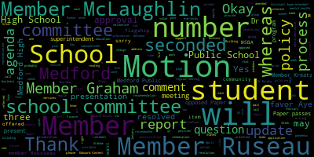
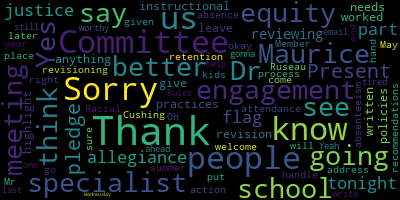
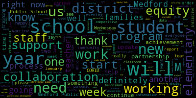
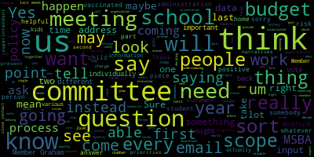

AI-generated transcript of 1.24.2022 - Regular School Committee Meeting
English | español | português | 中国人 | kreyol ayisyen | tiếng việt | ខ្មែរ | русский | عربي | 한국인
Back to all transcripts
[Lungo-Koehn]: 6.30 p.m. on January 24, 2022 will come to order to be held in the Howard F. Alden Memorial Chambers. This is also presented on Zoom, and you can also call in by dialing 1-929-205-6099. Enter meeting ID 990-4806-8111 when prompted. We have a number one roll call of attendance of the members and the student representatives. Member Ruseau?
[Ruseau]: Thank you. Member Graham?
[Lungo-Koehn]: Here.
[Ruseau]: Member Kreatz? Sorry, Member Hays?
[Mustone]: Here.
[Ruseau]: Member McLaughlin?
[Mustone]: Present.
[Ruseau]: Member Mustone?
[Lungo-Koehn]: Here.
[Ruseau]: Member Ruseau, here. Member Mayor Mungo-Kern?
[Lungo-Koehn]: Present. Seven present, zero absent. If we all may rise to salute the flag.
[Mustone]: I pledge allegiance to the flag and justice for all.
[Lungo-Koehn]: Member Ruseau?
[Ruseau]: Yes, I apologize. I did not ask if there was a student representative on the Zoom. I don't know if anybody knows.
[Lungo-Koehn]: Is it Ms.
[SPEAKER_05]: Puccio?
[Unidentified]: Dr. Christian, can you tell me the student names by any chance? Thank you.
[Lungo-Koehn]: Number three, we have the consent agenda, approval of bills and payrolls, regular school committee meeting minutes from January 10th, 2022. Is there a motion for approval? Motion to approve by member Rousseau, seconded by member Kreatz. All those in favor? Aye. All those opposed? consent agenda is approved. We have reports of subcommittees, and I don't believe there are any just yet. And number five, report of superintendents. Superintendents, updates and comments, Dr. Maurice-Edouard Vincent.
[Edouard-Vincent]: Good evening. Today is January 24th, which the United Nations deemed in 2018 as the International Day of Education. The declaration called for free and compulsory elementary education to ensure inclusive and equitable quality education for all by 2030. The 2022 theme is changing course, transforming education. The United Nations resolution highlighted the importance of the fundamental right for everyone to education, to have an education, to help to build a more sustainable, inclusive, and peaceful world. I'd like to share this evening on behalf of our community partner, Project Bread. They have asked us to encourage our families to apply for critical SNAP benefits. There have been policy changes made to SNAP, and we hope that our families will take the time to check it out at gettingsnap.org. SNAP helps households meet nutritional and dietary needs, enables households to purchase food that is healthy and culturally appropriate, and supports low-wage households. On a different note, I would like to add a special congratulations and share a very special happy birthday to Ms. Ginny Eugenia Christopoulos, who's the longtime school lunch mother at the Brooks Elementary School. She celebrated her 90th birthday last week on January 19th. Ms. Jenny, as she is affectionately called, has the energy of an elementary age student. And she was a bright light and busy bee at the Brooks Elementary School. She is a beloved member of the school community, and we appreciate her willingness to support our students. So happy birthday, Ms. Jenny. 90 is a wonderful accomplishment. I'd like to remind everyone to please note that this Wednesday, January 26th, that we'll be hosting a Zoom monthly support meeting for parents and caregivers with children dealing with autism spectrum disorder, ASD, and related disorders from 6.30 p.m. to 7.30 p.m. this Wednesday evening. Also on Wednesday, I'd like to thank in advance we have another vaccination clinic happening this Wednesday. I want to thank Nurse Avery and all of the medical staff that have been working tirelessly in collaboration with our Board of Health partners. and Mr. Murphy, who will also be providing a more detailed COVID-19 update shortly. But I wanted to remind everyone that the vaccine clinic that's gonna be taking place this Wednesday will be from 12.30 p.m. until 6 p.m. Not only is the COVID-19 vaccine available, but also the flu shot vaccine. So we are now offering two types of shots, the COVID shot and the flu vaccine shot. While the COVID vaccines are limited to staff and students only, the flu vaccines are state supplied and available for anyone, including uninsured adults. My Friday message included the registration links, and they are located on the school blog as well. This Thursday, January 27th, the Medford Family Network will be presenting a Zoom meeting with the topic, Keeping Kids Safe on the Internet. This is a training for parents and caregivers of children eight years old and younger. It will be held from 730 to 830 p.m. Please register with the Medford Family Network. Also, the Medford Family Network is seeking donations of diapers, sizes five and six, as well as wipes. If you are able to assist, please call Medford Family Network at 781-393-2106. So after a three-week shutdown due to COVID-19 concerns, I'm happy to report that our Mustang athletes are back on the court, which includes our middle school basketball teams, and they are back on the ice as well. Additionally, our gymnastics team and indoor track team have returned to competition. So I'd like to wish good luck to all of our winter sports teams. I also want to share the good news that our new beautiful Charlotte and William Bloomberg Medford Public Library is open and is busy scheduling all types of in-person and Zoom events for all ages. They just announced the 2022 teen reading challenge for students in grades six through 12. For students who might be interested, please contact Nicole at the library at 781-475-5735. Another important update, Medford High School, regarding our MSBA application deadline update, So the MSBA, Massachusetts School Building Authority and Central Administration, we will be presenting a report to you later this evening for the application window with MSBA for the peer projects. The application window opens this Friday, January 28, 2022. and the administration plans to consider possible statements of interest, which we refer to as an SRI, about two programs. There is the Accelerated Repair Program, ARP, which involves repairing potentially specific sections of schools, and the CORE program, which involves building a completely new school. The respective deadlines are March 25th and April 29th. This important work will require the collaboration and support of many stakeholders in order to be successful. A report again later this evening will be presented to the entire body. In closing, I would like to say that Chinese New Year 2022, also called the Lunar New Year in the Spring Festival, begins Tuesday, February 1st. It is the year of the tiger, and those born during this year are predicted to be brave, competitive, unpredictable, and confident. We express our wishes of good health and happiness to all of our Asian families and friends who celebrate the 16-day festival. Thank you.
[Lungo-Koehn]: Thank you, Dr. Edward-Vincent. Number two, we have an introduction to the equity process. The equity process, a firm hired to conduct the equity audit of Medford Public Schools will present the scope of work for Medford Public Schools. Cindy Weeks Bradley, CEO of the Equity Process, and Superintendent of Schools, Dr. Maurice-Edouard-Vincent.
[Edouard-Vincent]: So I'm gonna ask Ms. Cindy Weeks to please come forward to the podium, and I am happy to have Ms. Weeks here to present before this body. Ms. Weeks is the founder and CEO of the Equity Process, and she is going to be working with Medford Public Schools on our equity audit, and Dr. Cushing, I'm gonna ask if you wouldn't mind putting up, she has a brief presentation to share with you regarding the work that she will do with us. Ms. Weeks? They will turn it on, I believe, in the, thank you.
[Unidentified]: It's on right now.
[Weeks]: Okay. Thank you for having me this evening, and I'll just give you a brief presentation of what we expect to do in Medford. So first of all, If you can take a look at the screen, and I'm sure you already know, but this is our mission. Next slide, please. Thank you. This is our mission and vision. Pretty much we're here to help diversify the school place, and that diversity does not end at race. It continues on to ethnicities and abilities and genders and sex and all the gamut, runs the whole gamut. Currently, we'll be looking at your HR system within the school. to see if there are any ways that we can help enhance the work that you're already doing. So we're not here to shine a light and say, oh, no, no, it's really to help you progress into 21st century learning with the best HR practices that are out there. Next slide, please. Thank you, Pierre. Humanity over politics is where I stand. I really don't get into politics. I don't watch the news. I don't really read too much of the newspaper. I'm a person of compassion and I feel like together we can solve these issues. It's really not all the other stuff that's out there. So when I say humanity over politics, I really mean that it's nothing that I can do alone or my organization can do by itself, but everyone comes together collaboratively for the betterment of all students, because that's why we're here. Next slide, please, Peter. I usually use a lot of words for this, but I decided that I should use a visual. What does the equity audit look like? What it really looks like is us just doing a lot of work, so combing through tons and tons of policies and procedures and practices and talking to people, and that's to facilitate discussions and the focus groups and surveys and really checking to see which patterns emerge, what is already there, what isn't there, how can we enhance? That's us just doing the work. But what it does not look like is the next slide, please, Peter. Oh, sorry, this is still what it looks like. So I took a look at this report from Stanford University, written in April 2021. And it really gets into like the pieces of the audit that looks at diversity and leadership, community engagement, HR policies, where's where I will be right now, engaging like the culture of the community and not just the school, as well as learning and development. Thank you, Peter. Next slide, please. Here's the one where it does not look like. This is quite interesting because usually once reports are done, people will ask a lot of questions like where's this, where's that, where's the next, where's the third. It is not a scientific method by any means, so I don't want you to believe that I'm coming in here and I'm going to do this scientific experience. That's not what it is. It's really looking at your data very closely and seeing what matters to the city of Medford, the public of Medford, the community of Medford and the schools. So it's tying all those pieces together. We will not have a research topic. That's why it's not a scientific experiment because we have our own expertise in this area, but we're not researching a specific topic. You will not have a hypothesis. That's not cool at all for this kind of work. What we're doing is really allowing the data to write the script or the narrative. So it's what your data shows us. And there is no test or experiment. It is what it is. This is what your data says. Here's the information, and here are our recommendations. Next slide, please, Frida. simply stated, how do we do all this? We aim first to get to know everyone that we come in contact with. There'll be an opportunity for school committee members if you are interested to volunteer and do one-on-one interviews. You don't have to do them, but I feel that your voice is utterly important, so you'll have that opportunity. We will interview folks in HR and the leadership team, and we'll interview Maurice, We'll also give an opportunity for unsolicited information to be included. When we do audits, people tend to email me all sorts of stuff, so we take that into consideration. We look at the implicit bias tools that you're currently using and think, are there any that we should be using? Things like that. Handbook, right at the bottom you'll see handbook, employee handbook, union handbook. content level curriculum, behavioral policies. How does our work impact children and what is the relationship that we have with kids every day? Not just face-to-face relationships, but also on paper. Next slide, please, Peter. And this is probably, okay, I'll be, I'm telling you, I'm a little biased right now. This is my favorite part, where I ask this question, what might a great experience look like for all students in Medford and not just some? Because we know that there are some students that are doing really, really well and some students that are not doing well, but my job is to figure out how can we all come together and help all students do well? You don't have to answer that question, but food for thought. And how do we ensure, because it is our responsibility as well, including mine, even though I'm not a resident of Medford, how do we ensure and embrace the notion of students in minority populations? So once again, I'm not just here for race, I'm here for students in all minority populations. So I put a little caveat there, BIPOCs, L, students with disability, LGBTQIA++, students from varied ethnicities and religions outside of the dominant culture. and many others. So how can we ensure that they feel safe and actualize their vision of success too? I'm an immigrant. I come from Barbados. I came here when I was five. America is so vastly different from Barbados. I had all my education here. UMass Boston, my bachelor's degree, my master's from Simmons College, which is now Simmons University. and lots of, you know, professional development going forward. One thing I can tell you about Barbados is this little, if you don't know, it's a tiny, tiny, itsy bitsy country with a hundred percent literacy. So it baffles me. How does grand America not have a hundred percent literacy? How do we have homelessness? How do we not support one another? So it's just ingrained within me to do this work. And I really want to make sure that students can have the choice when they graduate from high school. So it's not us telling you, well, you're going to go to college, you're going to do a trade or I don't know, you're going to be a vagrant on the street. That's not our job. Our job is to give them the best so that they can have choices. And that's critically why I'm here today. And I will end with this last slide, please, Peter. Do you have any questions that I can answer for you? Thank you, Peter.
[SPEAKER_05]: Yes, Paul. And there are so thank you thank you for the presentation.
[Ruseau]: Thank you for the presentation. So I certainly understand my HR is sort of the first thing here is there a plan to keep coming. I mean, HR isn't the whole shebang. I get that it's sort of like a critical step, because it's like how we get our people, or even how we treat our people. There's a lot about that. But is it too soon, having not done this yet for HR, to know what the next step is, or have you been engaged for a next step?
[Weeks]: So the next steps is truly up to, I just say, Maurice, I don't know what your technical terms are, so forgive me not being disrespectful. But the next steps is for you and her to have a conversation to see how deep you want to go with the equity audit. But since it's such a large district, when her and I talked, we thought it would be best to start in pieces. And HR was the first place to start, because we don't have the right people, right? in front of students and how do we begin to move the work. And it's really about 21st century learning. So we're not saying like, Oh, it's so bad right now. What we're saying is what does the future need for our students to be successful? And is it currently here right now? And if it's not, what do we need to do to ensure that it's here?
[SPEAKER_09]: Thank you.
[Unidentified]: You're welcome. Thank you so much for the presentation. Oh, member of Graham.
[Graham]: Thank you. Um, I had a couple of questions as, as I was looking through this. So when you say this, the scope of this initial piece is HR, can you give us a sense of what that means to you in terms of the things and systems and types of procedures that you are going to be looking at in this phase?
[Weeks]: Thank you for that question. I want to tell you what it means to me is absolutely nothing because I come in with a blind eye. So however you have defined human resources in Medford, that's where I begin. So it's not my definition of human resources. It's your definition of human resources. We begin to look at policies and practices and procedures. When I say policies, I mean, we're looking at school committee policies. We're looking at HR policies. We're looking at the overall school policies. We're looking at handbooks for every single school. We're looking at like, how do you do your hiring and retention? We're looking at who has left when it comes to people in the minority population. Why haven't you retained them or how have you retained them? So those are the things we begin to look at. We look at the mission and the vision of the school, but we also look at the mission and the vision for human resources as a whole. So there are a lot of pieces that we tend to look for, and we look at those in certain ways. We look through the papers, what you have to present to me. We also ask certain questions when we begin to do facilitated discussions, like focus groups and interviews. Did that answer the question?
[Graham]: Sort of. So I think the question maybe is for Dr. Edward-Vincent, how has HR been defined here in Medford Public Schools for this equity audit to be completed? Like what is the definition we're working against?
[Edouard-Vincent]: So right now, from an HR perspective, One of the challenges we face here in Medford is that it is very difficult to recruit and retain diverse candidates. So that is kind of like one of the elephants in the room that we are very, very aware of. So we are looking at the current practices of where are we finding candidates, where are we recruiting them from, coming up with additional potential partners that can help us diversify our staffing when there are, you know, open positions. And the retention piece, which was mentioned earlier, that we have hired some BIPOC candidates or candidates of color and they may stay one year or two years and then they choose not to stay. So that is a question, another opportunity becomes available and they take that opportunity. So trying to unpack like the why is there, is there something that we're not aware of that could make Medford less attractive than what we and so if that is the case what do we need to do as a district to make it more attractive and try to think about further bringing greater diversity to the school system and so as a starting point it's the reason us you know, this person isn't doing this thing in human resources, but it's more like, what are we doing? And then what else could we be doing? And presenting us with other opportunities to be able to better recruit and retain. We do have two other groups that we're trying to work with, but we still haven't been able to get the traction yet. So we're trying, but we're just not getting the traction that we're hoping to get. So by having the audit start in human resources and also in light of the pandemic. And again, we just were in the process on the tail end now of this surge that we just were dealing with. We were like, where can we start? and not have an impact of going in and out of all of the classroom, in and out of all of the schools right now. So hoping to do this first phase, get a really strong piece of data and information to help us move forward as a district. So that was the thinking and the strategy behind starting with human resources and looking at recruitment and retention strategies.
[Graham]: Okay. That helps. And I guess the other question I had is when you say we, who do you mean? And was the racial equity task force involved in the like scope selection here, or is this something that the administration has decided?
[Edouard-Vincent]: So this, the racial equity task force has weighed in and expressed their concern and their support of us doing an equity audit. This particular focus right now in terms of mid-pandemic and wanting to start the work, the administration made the final decision with the equity process to start here right now, even though it's still mid-pandemic, but start the work instead of saying we have to wait another year to start again because We have to start somewhere. We can't pretend that the work doesn't need to happen.
[Graham]: Sure. And can you just tell us how long you expect this work to take in this first phase?
[Weeks]: Yeah, so in the first phase, I'm expecting we're going to start this week. Yeah, we're going to start this week. Wow. Excuse me, I'm going through some stuff personally. My father, my husband's mom passed away. So we're going to start this week and we expect to be done by May. So by May, we will have a report for you at the minute maximum. It may be even sooner depending upon the documents. And I just want to preface that, though that may be the case for Medford, when we go in, we may find more than that. We'll be looking at everything. and maybe how do we support our teachers or staff who have disabilities? That may be a recommendation. So it will not just be a recommendation on that alone. You will have that information, but it is really looking at what is best for students. And we know that diversity as a whole is best for students, but that is the focal point.
[Graham]: Awesome. Very sorry for your loss. Thanks for the presentation.
[Lungo-Koehn]: Sorry, I couldn't remember. It's okay. Thank you. Member Ruseau?
[Ruseau]: Thank you. Member Graham had asked a question that made me remember my other question. Will we get your recommendations even if some of them are not the most solvable? Like, if you come back and say, we can hire all of the We can hire candidates that are of all kinds of diverse backgrounds. They're going to move here from wherever they went to college and they're going to go to the W's and get a 25% pay raise. I want to know, will you tell us if the problem, one of the major problems is that our pay is, I'm just making numbers up, is 10 or 15% too low. You can do all you want. You're never going to have a diversified staff because They're in demand and districts with money to burn or nobody has money to burn other than Cambridge, but other districts who have a higher pay scale are also looking and I don't for a second, of course, have any problems with staff going to find a place where they can get paid more. That is a That's life, and that's what they should do if that's what they want. But I want us to hear it, even if it puts us in an uncomfortable position when it's time to start our next negotiations for a contract. I mean, if you come here and say, your teacher pay is 15% too low, and I'm just making up a number, I want to hear it, because I want to be able to answer to the community who will be like, OK, you know, year two, year three, year four, and you're still have, you know, essentially an all white workforce, what's happening? And the answer is, if part of the answer is we need to override to dramatically increase pay across the board, I'd like to know that instead of just imagining, you know, reading an ed report or comparing us to other towns by myself on the DESI documentation. It'd be nice to have somebody who doesn't really have a stake in this. to say, you can do all you want and you may have some success, but if a big root problem is your pay is not going to cut it, somebody has to tell us that other than me and other than the teachers union. And, you know, like we all have too much in this game. It's not a game, but so will you tell us that even if it's a very uncomfortable truth?
[Weeks]: Yes, I will.
[Ruseau]: That's a long way to ask that question.
[Weeks]: I appreciate your candor just now. And I loved your terminology and your example. So I'm here to tell you the truth. And I'm not here to make anything up. I'm here to tell you what the data is telling you. So the data will tell you the truth. The data writes a script. The data gives you the narrative. And I give recommendations. I can give a million recommendations. But if you choose not to heed the recommendations, that is also your choice. But it's going to be the truth.
[Ruseau]: Thank you so much.
[Weeks]: You're welcome and thanks for the question.
[Unidentified]: Member Mustone.
[Mustone]: Thank you for being here tonight. Thank you. The part about reviewing the instructional practices policies, anything written, do you like highlight it and say, this needs to be worked on and give us a revision or do you leave us to do the revisioning?
[Weeks]: So the revisioning would come from you. The recommendations may say something like, I don't know, hypothetically, I believe, it's not just me, I keep saying I, we believe when we read whatever, we saw A, B, C, D, E, F, G, and here's a recommendation. We believe that this recommendation will support fostering growth in this area. However, the nitty gritty, the details, the details come from you all, and we would also recommend that you don't do it alone, but have a group of stakeholders. So that's school committee, parents, you know, leaders and children as well. In this work, I don't know if this is a bias or not, but in this work, children tell the truth. They tell the story. They tell us what they need. And somehow along the way, we're losing that communication with them. So I encourage us always to involve them in all of the stakeholder work. They have to be a part of it because it's their lives, it's their future. And I feel, we feel that they need to be a part of it.
[Mustone]: Thank you for that. So Dr. Maurice, do you think the recommendations that we are given by the equity process come May, would they go to the Racial Equity Committee to put them into action or will we address that later on?
[Edouard-Vincent]: So we definitely will be keeping the Race Equity Task Force updated. Since this is specifically, even though we're going to get additional other information, they will be looped in this portion of the process of what we're being told about HR. But I will definitely, when the whole process is completed, there will be a presentation to you, the committee, so you'll have what the recommendations are and what potential next steps are feasible at this point in time. So that is definitely something that you will have before the school year is out.
[Mustone]: All right. Thank you. You're welcome. Thank you.
[Weeks]: Thank you so much.
[Unidentified]: Thank you, Ms. Weeks.
[Weeks]: Thank you, everyone. Stay safe. Have a wonderful night. You too. Thank you.
[Lungo-Koehn]: Next, we have number three COVID update. Assistant Superintendent of Finance and Operations, David Murphy and Avery Hines, Director of Health Services will report on operational updates and pending COVID shifts in the Metro Public School. Mr. Murphy, Ms. Hines.
[Murphy]: Thank you, Mayor. On the screen is a document that we circulated earlier this evening that I intend to walk you through tonight. Ms. Hines is available on the call as well for specific questions. The superintendent mentioned in her opening comments this evening the success that we've had with our vaccination clinics running every Wednesday. We intend to continue that through the month of February at least. As I reported to you previously, our school nurses are phone banking both in addition to those clinics and while the clinics are happening. and we are contacting both staff for purposes primarily for boosters. A very limited number of unvaccinated staff at this point and also families who have not yet had their children vaccinated. There have been some questions previously with the committee and I will get to the testing that's on the screen momentarily but just to We know there have been some questions from the committee previously regarding in-school vaccinations. We are looking at the week of February 14th, just prior to the school vacation, to attempt to administer in-school vaccination clinics, at least at the elementary schools and potentially at the Andrews Middle School as well. We're going to be working with the principals over the course of the next week to identify a space so that parent or caregivers who want to come in to be with their, particularly with some of the younger children for a brief period during the day, just prior to and after the administration of the vaccines, we want to provide that option to families as best we can. Closer to the microphone. I apologize. I don't know that I've ever been advised that before, so that's... The blow's on, okay. So we're looking for the vaccination clinics the week of February 14th to be in school. We'll also have the app school portion for staff or people for whom it's more convenient, which we know for some families will probably be the case. I'll take questions about the, any, any questions you have about the vaccine clinics, um, either now or after we walk through the testing, but tonight's update is focused more on some of the shifts and testing that have occurred or are going to occur, uh, based on information that we've received over the last two weeks. You'll recall during our, uh, January or January 10th, uh, meeting, um, uh, Ms. Hines and I discussed with you how, as some of the variables with the pandemic were changing, There was a need for us to identify which variables we would need to change with regard to our testing protocols in order to keep the program sustainable. And in that intervening time, DESE announced a program that districts across the Commonwealth, including Medford, will be taking advantage of, and it is essentially the distribution of a large volume of rapid at-home tests. And this really does mark a shift, as some of you have called with questions in the previous, over the course of the last week, it really does mark a shift of sort of a moment in which what we have as an organization, the capacity to do on a more of a long-term basis, and I hope it's not long-term in terms of being measured in years, but it's something that we have the capacity to do more so than some of what we've been able to do over the course of the last year and a half. And over the course of this last surge, frankly, we've really seen some of the challenges that arise when the organization takes on things that it frankly does not really have the capacity to do. So we've made some adjustments in recent weeks. We transitioned to individual PCR testing. That was necessary given the numbers and the positivity rate that we were seeing. It is not something that is sustainable. and we this week have transitioned back to pool testing and that we're one day into the return to pool testing but all reports are that it's gone well and obviously tomorrow we will see the return of the pool results that will determine its sustainability. We intend to continue with the pooled PCR testing through the month of February. However, we also intend to adopt the rapid at-home testing program that DESE has made available to districts. In doing that, it does change some of our thinking with regard to how we ultimately step down our surveillance testing program, which, as we mentioned at the last meeting, is no longer the recommended course of action by the CDC and DPH. And so as we transition, our plan is to go through a couple of different phases that will start with the the reduction of the official contact tracing that we're still doing. You'll recall that we've mentioned before that the boards of health, including here in Medford, ceased contact tracing for the most part over this past summer, in the summer of 2021. We made the decision as a school district to continue that contact tracing because we had essentially built up a robust testing program that we knew families and students and staff were relying on. We think that that was the right, we and Ms. Saenz can chime in, but as an administration we feel that was the right decision at the time. As you know, there were a number of occasions in which there were options to essentially take an off ramp from our testing program to transition to the test and stay program that at the time was was being endorsed by the state. And we felt at the time, based on the factors on the ground, that our testing program essentially provided a greater level of insulation than the than the test and stay program. Some of those variables have changed and it's being manifested in situations like today, when there were classes of a dozen or more students who were escorted down to the testing area and based on either previous positivity and maybe some cases in consent forms, but only a very small fraction of those classes were actually going through and having their tests administered. That's not surprising based on the numbers that we've seen in recent weeks, but it also begins to tilt the scale with regard to exactly what benefits we are affording our students and families when we're running this program that is essentially occupying a significant amount of our time operationally for increasingly limited benefits. and that equation begins to evolve even more so when there are rapid tests that we're able to send home. So under this plan what we would do is again we would continue their surveillance testing and it's sort of a belt and suspenders approach that we would have an overlap with our surveillance testing and our rapid tests for the first several weeks but we would step down the contact tracing and then ultimately we would make the shift at the end of February to the diagnostic testing and testing of symptomatic. We intend to maintain our partnership with Tufts and the Broad Institute so that we're not reliant only on the rapid antigen test that DESE is providing. So, again, we're still going to be doing a both-and approach, but this will allow us to refocus our efforts, particularly in the health services department, on some of the core functions that are, to some extent, despite the best efforts and really herculean efforts of our school nurses. But there are pieces of the work that are being neglected right now because of the approach that we've gone with, which I think it's fair to say it was a strategic decision. And again, not one that I think any of us regret. But we've sort of passed the point at which what we're doing is considered a best practice. This would be pool testing for the next three weeks with contact tracing, pool testing for the next six weeks, excuse me, surveillance testing, and then the adoption of the rapid test distribution in the first week of February. And eventually that will be the centerpiece of our testing strategy going forward in March. Ms. Hines, is there anything you wanna add or did I get it right?
[Hines]: No, you got it right.
[SPEAKER_09]: Thank you.
[Ruseau]: Mayor. Member Ruseau. Thank you. Um, I, I really appreciate having the plan for future weeks, which is, seems like a huge turning point that we can plan more than the next day.
[Murphy]: You say that Mr. So, but you do remind me, it is conditioned upon the positivity rates declining. I should, I should have that. So our expectation is declining positivity rates at this point. And assuming we see that, um, this would be what we would, how we would execute that. But I appreciate that. I don't know if that was a potential reminder or not, but I, if it was, I appreciate it.
[Ruseau]: Thank you. I also think there's another dependency, that's that the state can come through with tests. I still can't buy one at the CVS, can you? But somehow they're gonna distribute millions of them. That's fascinating. But my question was about, in the last, and on Friday's update from the superintendent, it said that you were doing PCRs this week, individual PCRs. Was that just a?
[Murphy]: It was an error. An error, okay.
[Ruseau]: I just wanted to share, nothing changed.
[Murphy]: It is full testing this week. It is still PCR testing, and I think that's important that people should remember that. When we talk about PCR testing, it's the best in class, highest level of reliability, regardless of, or generally, regardless of viral load. I'm not gonna attest to that myself, but more reliable, generally speaking, than the rapid test. The pool test is just the way in which it's administered. And just as an example, if I could, the problem with the pool testing, why ultimately, once the free rapid tests are available, we're keeping people fully out of the building, if they have enough viral load to test positive in a rapid test. And the pool testing, which again, is our only option from a PCR perspective, there's a full 24 hour window in which, and really a 48 hour window, as compared to the rapid test in which people are coming into the building and potentially contagious. At the beginning of this, those rapid tests weren't available to your point. You know, we don't have them at our fingertips just yet, but assuming that that commitment by DESI is something that they, I think it will be, is executed properly. This is a more reliable way. And also importantly, and I should have mentioned this in my comments, students will need to opt into the program in order to receive the rapid tests. That is a significant procedural step that I don't know that was necessarily a centerpiece of the media messaging with regard to DESE. And one of our concerns is if we were to keep the surveillance testing open in perpetuity, in addition to the drain on resources, both human capital and financial, Um, we think it will be a disincentive for folks to opt into the rapid tests. And so that is another reason that it needs to be phased out. Thank you.
[Hays]: Miss, um, member Hays. Hi. Um, I have a question. If you could go back, I don't know if you can go back to the chart.
[Murphy]: I can't, but I bet Dr. Cushing can.
[Unidentified]: Thank you.
[Hays]: So on the week of 2-7 where it says PCR pool testing and contact tracing for high need students.
[Murphy]: Yes.
[Hays]: Is the PCR testing only for high need students?
[Murphy]: Great question. Thank you for pointing that out. The contact tracing, while it will be stepped down and reduced generally, consistent with the practices that the City of Medford Board of Health and Boards of Health across the Commonwealth are following. We have made a strategic decision that we will maintain contact tracing for some of our high-need, most vulnerable populations. And so that could include kindergarten students, non-communicative students, ELL students in certain cases. We will be, health services will be monitoring that to make sure that we continue having that layer of insulation in addition to the testing itself. So the PCR testing will be for everyone? Correct.
[Hays]: Okay. Can I have a couple other questions unless someone else
[Lungo-Koehn]: I have the same question. So PCR pool testing for everybody, but the contact tracing for high needs. That was a good question. Yes, continue.
[Hays]: I wanted to ask about the infographic that went out, which I thought it was great that it went out so quickly that that information just in a really clear simplified. That was wonderful and helpful. I did want to ask about one possible clarification on that, if there's possibility of tweaking it. I didn't think it was particularly clear when day one since the since really day zero is supposed to be the day when you first find you have symptoms or test positive. And then from there you start counting one.
[Murphy]: I'd ask Miss Hines just to comment on that. Okay, sure.
[Hines]: I can comment on that. Um, I think As a note, that's an infographic for general information. Obviously, if someone tests positive or is identified as a close contact, they're going to be having a conversation with the school nurse. And that's where we identify day zero, because a lot of different things go into play. Do they have symptoms they didn't recognize as true COVID symptoms? Because we're finding a lot of families or students don't think just a headache or just a sore throat can be their day zero of symptoms. And also with pool testing, what day they tested in the pool versus what day they got their confirmatory rapid or PCR also confuses some of our students and families. So as much as day zero is where we start our count, that could be really different for everyone. And we didn't want to make the infographic too wordy or too confusing. So again, in any of these circumstances, they're going to be having a conversation with their school nurse, who's going to send them a very detailed timeline saying day zero, day one, day five, day six, on and on and on. So I hope that helps clear it up.
[Murphy]: It is a daily balance that Miss Hines and her team are striking with regard from a communications perspective. We want to provide enough information that everyone in the community has a bedrock amount of knowledge that they need to make decisions for them and their families. And at the same time, when communicating en masse, there is a risk, as Miss Hines points out, that too much information, we're going to lose part of our constituency that we're trying to target the messaging to. And so, When in doubt, the best course of action is to always pose the question to the school nurse.
[Hays]: With that in mind, I wanted to ask again about the communication going home in the backpack that we've talked about a few times. if we can get again because there's so many changes that are happening that to get that home because not everyone always accesses the information that comes either through email or on the school website and we talked about that and I was hoping that maybe that's going to happen soon especially because then we can get make sure it all gets out translated and everyone gets it.
[Murphy]: It is going to happen soon. Um, we've intentionally not done it yet because, um, we knew there was a likelihood of some of these variables changing between your last meeting and tonight. So had we sent a message on the backpack a week ago, we would have needed to send another one the following week. And I think that potentially could have even been more confusing. But now that the facts are sort of starting to settle, um, I would expect that we would do that within the next week or so in the next week. I think in the next week or so, I want to make sure that it's timed in proximity to some of the actual changes so that we are maximizing the value of that communication. But I would anticipate it happening within the next week or so.
[Unidentified]: Thank you.
[Murphy]: Thank you.
[Lungo-Koehn]: And then on that, Mr. Murphy, just in general, it probably should lead to a website because things are ever changing. So even if you send out a communication next week, it will probably change the week after. I agree. The paper usage. Yeah. Uh, member Graham, Graham. Oh, wait, what was it? What'd you say? Okay. Member Graham, then member Kreatz.
[Graham]: Um, thank you. So in mid February, when we shift our contact tracing efforts, I just want to make sure what I think you mean is really what you mean. So Parents should really at after that point not expect to get a call saying their child was a close contact of somebody who tested positive in full testing and therefore has to stay home because they are unvaccinated or. they get a call saying your child was a close contact and they're vaccinated to watch for symptoms. So what we're saying is that communication that's happening right now will stop for the most part. And instead, students vaccinated and unvaccinated will have access to at-home tests so that if they see symptoms, they can test right there on the spot and know whether their child is positive or not. Is that correct?
[Murphy]: Yeah, that is correct. And the only sort of, um, uh, points I would make in that, that second group of students that you referenced in your example, so you are, you are correct. The communication, uh, to the close contacts of those who have tested positive will not come from the school after the week of February 7th. Okay. However, with the exception of the high need populations that we referenced earlier, that will continue. And the other exception, not exception, but the second group that you just mentioned where we currently contact vaccinated close contacts, not to tell them to quarantine because that wouldn't be consistent with the protocol. We communicate to vaccinated close contacts and tell them to monitor for symptoms. That is a good practice when there is capacity to do that, but to go back to the point about the need to sort of strategize around how we deploy our human capital and not lose sight of core functionality, particularly in the health services department, who have a host of core responsibilities that they really need to attend to. It's sort of a good example of why we have to rethink this. Every single one of us has a responsibility to monitor for symptoms. And so if you are getting a phone call saying your child is a close contact, but because they're vaccinated, all they have to do is monitor for symptoms. Why I think we can appreciate, particularly as we've gone through the various phases of this pandemic, the value and the sense of confidence that people feel because they're being told that just be you have to be extra careful. All we're really doing at that point is tracking people down to tell them something that we tell them to do. every single time we communicate with them. And I think from our perspective, when we are thinking about the best use of resources, we have to sort of weigh that against all the things that are not being done while we're making the phone call to tell everyone to do the thing that we've already told you to do. I hope that was helpful.
[Graham]: Yes. And then I think the other question that I had, and maybe this is a question for, can you provide this to us in some fashion in the future? So my understanding is, in general and here in Medford, people that we have excluded from school because they are close contacts really fairly rarely have ultimately tested positive. for COVID. So that's one piece of data. I would just like somebody to be able to validate or say yes, that I don't even need like precise numbers, but that yes, that's generally what we're finding and it's holding through this surge. I think that would be really helpful for people to know.
[Murphy]: It's not to say that, I want to make clear that to the person who catches COVID in the school, the fact that, they are a very, very rare example of somebody. Right, it doesn't matter. They really don't care. And I wanna be, I sort of have a degree of empathy for the family who's got a student at home right now listening to this saying, that's nice that you're saying it's somewhere potentially between one and 2%, and that's at a national level, which means for an organization like us who has put all of these precautions into place, the number you could infer would be even lower, but it doesn't matter when it does happen. sure but your point I think is accurate that in-school transmission is exceedingly rare and that is part of what we're weighing here because while the chance for contraction may be rare, the chance for regression when students are excluded from school is very significant. And that's something that is a reality that we are frankly living on a daily basis, as I know many families are.
[Graham]: Yeah. And I, the reason that I say that is because I think, you know, families are sort of in this constant assessment of risk mode. And every time there's a change in the program that sort of brings the sort of need to like reassess how I'm assessing risk personally to the surface again, to say, you know, am I comfortable? Am I uncomfortable? Does this create unnecessary, you know, does this create an intolerable amount of risk for my family because I have somebody who's very ill at home or whatever? So just, you know, any data points or messages of clarification that you could share about that would, I think would be helpful to some. And I think to others, as you mentioned, if they have been that person, it's not going to matter that much to them. But I think for those folks who are really, um, concerned as this, as this shifting happens, I do want to try to address their concerns. And I think the other piece of data that I, um, is like gets harder and harder to parse every single day is this like overwhelming feeling that, you know, all of these people who are vaccinated, who have COVID and, I don't think that's at, like, I think in the aggregate, the numbers are still quite substantially like indicating that vaccines are, they work and they're effective and all of those things. So I would be interested to know what data, if any, we have on breakthrough infections in our student population. And I don't know, like, again, I don't need you to answer it today, but just, something about those two questions, I think, would be very helpful for people to understand.
[Murphy]: Yeah, I think that's fair. I think we can certainly incorporate that into some of our communications, particularly as we articulate the underlying rationale to some of these shifts, again, to the point of those who have contracted or potentially could contract Um, the data will have, you know, a different sort of weight, I suspect, but, um, and I think with regard to breakthrough infections, and I think, um, that is data that is available to us. So I think this will be able to, something we'll be able to provide. I do think as is the case when this is looked at, whether it's at the state level, nationally or here in Medford, um, the numbers around severity that is a, it is a relevant, um, fact in conjunction with the breakthrough infections, because, um, you know, part of the sort of the reality of the vaccines is that it does not, obviously it does not assure you that you will not get COVID. It does provide a, um, substantial layer of protection against severe illness. And that's, um, that just has to be part of the conversation when we talk about breakthrough infections.
[Graham]: And then I also wondered if you could, or if you had any information about the media reports that we're seeing about the legislature taking votes to send improved quality masks for students or DESE. There's been various publications, you know, down the, down the chain of politics around what is coming. And I just am curious, like, are there masks coming for kids or do we not know?
[Murphy]: I don't think we know. I'm familiar with some of the reports that you're talking about. I don't think we know with certainty, although it does bring to mind that one of the other pieces I think is for families to be aware of is that while we're adjusting our testing program, we're not, frankly, people aren't gonna have less access to testing, one, and also many of the other protocols that we have in place in terms of reminding folks about distancing and the mask wearing for the time being, those are, for now, remaining intact. I think that is another piece that will hopefully help people have some peace of mind. Thank you.
[Kreatz]: Thank you. Thank you. Yes. Thank you. Um, yes. So, um, I have a question and you might've mentioned it and I just might've missed it. Um, you did say that students will need to opt in to get the rapid test. So I wanted to know, um, are these, are they, is there going to be a distribution of the test kits and you know, they're going to be sent home every week or every two weeks, or is this, they're still going to be doing the rapid tests in school. I just, I wasn't sure what that meant because I've been hearing some communications on the news where if schools opt in, they're going to be sending home the kits to the families. Is that what we're doing or we're not doing that?
[Murphy]: Great question. Ms. Hines will be attending a meeting with DESE representatives on Wednesday, in which I think some of these points will be clarified. Based on the communications we've seen so far, what we anticipate is within the next week, we will receive our supply of rapid tests that are meant for staff. And then within the next two weeks, we will receive a supply of tests for students. I think the question that I have and I hope that Ms. Hines returns for her webinar on Wednesday with an answer, is we have, obviously when we sign up and we apply, we tell them how many staff, we tell them how many students. I think they have that information already, I hope, but either way, we fill it out and we tell them. And it's unclear, I think, at this point, and then Ms. Hines, feel free to clarify if you know the answer to this. It's unclear if the first shipment, if you will, is going to be based on the number of students we said we were ordering for or the number of students that we can attest to having submitted. Some of the communications would suggest it's going to be the latter, which is part of why we need to get this messaging out in all forms and why we are being as specific as we are with regard to the timeline on the surveillance testing. Because as you recall, both last year and this year, our consent form percentage went up more slowly than we would have preferred. And we want to try to get that, those percentages up as quickly as possible. So we're giving ourselves a little bit of a runway by leaving the surveillance testing open. But I think if we were to suggest that that's open in perpetuity, it would just be one more disincentive to actually opting into this program that we're hoping people opt into. So I think it's, I don't know the answer. I'm hoping we find out Wednesday, and I'm hoping they just give us as many tests as they can.
[Kreatz]: And is there a new consent form in the works right now?
[Murphy]: It's a DESE, it's a new DESE form, so yeah. And we're gonna, other districts have done it on an electronic platform and we hope to do the same.
[Unidentified]: Okay, thank you.
[Murphy]: Thank you.
[Lungo-Koehn]: Thank you, Mr. Murphy. Thank you. Number four, we have mid-year update on execution of the strategic plan Superintendent Dr. Marice Edouard-Vincent will provide a mid-year update on the status of key initiatives. Dr. Edouard-Vincent.
[Edouard-Vincent]: Yes, thank you. I'm very happy to be able to present this mid-year update on our newly approved strategic plan that is less than one years old. So I'm very excited about that opportunity. So I wanna start off by just saying that our strategic plan, the Medford Public Schools strategic plan is essentially an encapsulation of our entire academic program. It houses all of our key initiatives and programs that we are doing here within the district. This particular media update will highlight specific programming that is reflective of our core values. Achievement for all, collaboration for all, equity for all, and support and safety for all. The examples that are given are not inclusive of every single initiative that is taking place, but each item is reflective of my highest priority, the goal of advancing the Medford Public Schools. Medford Public Schools is an institution that will educate all students, irregardless of special learning needs, English language needs, identity needs, gender needs, or racial needs. As a public school district, our primary task is to educate the whole child. In Medford, we endeavor to see our students not just pass, but excel both academically and social emotionally. From the beginning of the pandemic, we have prioritized our most vulnerable, knowing that if we get the systems in place to meet their needs, then we can expand upon those initiatives to enable the entire district to thrive. Through thoughtful collaboration and true partnership with families, we have seen a positive difference. We took a strong stance and our positionality has served us well. I'm prioritizing the physical and emotional health and safety of our entire community. We are fully committed to designing creative learning environments for our students in order to prepare them for a better tomorrow. This strategic plan, which was created after two years of thoughtful collaboration amongst different stakeholders, it is the master blueprint that guides all the work that I do within the district. Again, my core values and foreguarding pillars are achievement for all, collaboration for all, equity for all, and support and safety for all, ACES. In order for Medford Public Schools to continue to stand apart from others, we will continue to try our best for all. As I highlight only some of the key initiatives, please know that this is a multi-year living document that will continue to evolve. This document will shift and adjust as needed in order for us to continue to meet the needs of all of our learners. These are my priorities, and this is what you can expect to see and hear from me. I also want to say that due to the pandemic, the district has been challenged by ongoing staffing shortages during this 21-22 school year. I want to commend our staff for their incredible flexibility and willingness to embrace new testing initiatives, curricula and data collection, as well as coverage during this difficult time. So thank you to all of my staff. So under the bucket of A, achievement, student growth and achievement, the key initiatives that we've worked on thus far, just this school year, the newly adopted NWEA MAP assessment. This data assessment platform can be used for all K-12 students. All of our teachers have been trained and they are implementing and reviewing data that's four to five months old, getting ready to do their second assessment shortly in the coming weeks. This NWEA MAP assessment really will help us revolutionize the way we monitor instruction internally. Another key initiative under achievement is our elementary math adoption, which is ongoing right now. The elementary math programming will be selecting a new curriculum to present, a new program, I should say, to present to the school committee by the late spring. Currently, right now, all classrooms are using InVisions 2020. But of all of our elementary classrooms, 22 classrooms are piloting. either Investigations 3, also known as Turk Investigations, and the other program is called Bridges. So 22 classrooms, different grade levels, are piloting the two programs, and everyone else is using Envisions 2020. And come late spring, a recommendation will be brought forward to the committee for a recommendation for a new program for next year. So that is a strong academic achievement piece, and we're really excited about that. Also, I wanna just highlight ECRI, which is our Enhanced Core Reading Instruction. With ECRI, there has been a significant amount of work and training for our teachers, K-2, in order to meet the needs of our students. With ECRI, we have trained everyone. Training started back in March of 2020, and we've been working closely with Eleni Steadman, who is a wonderful facilitator and educator from Hill for Literacy, who has been providing training and ongoing coaching for staff. And just to refresh your memories, ECRI, again, is a tier one strategy that's aligned to the scope and sequence of journeys. We are identifying or working with print concepts and phonological awareness, word recognition, fluency. phonics, and some ECRI tier two programming is being used during our intervention instruction. So that is a critically important shift that has taken place under the umbrella of achievement in our lower grades. Underachievement as well is we've been training all administrators. We've been participating in intensive professional development through this on supervision and evaluation, and that training will continue into next school year as well. and also we've been having data professional development for all of our administrators this year. That is one of the specific projects that Ms. Williams is working with administrators on to further equip our administrators to be able to utilize our new NWEO map platform. So those are some of the key initiatives that are actually some pretty big bodies of work that are taking place right now. Under the C for collaboration, the key areas when we're talking about collaboration and partnership, the importance of working with the team, We brought on engagement specialists this year, new to the district, working with schools, working with families, supporting, working with students. and providing support, a helping hand inside the schools, also touching upon some of our cell needs. We continue to have a robust partnership with Tufts University, our Board of Health. They are crucial COVID partners that have helped us to navigate. We also have a collaboration with Elliott Family Services, where they provide counseling and supports for students and families. And another collaborative venture that started last year online that we continued is the district-wide elementary common planning time. This fosters the highest level of teacher collaboration and it promotes greater coherence across all schools. a grade level team, all first grade teachers meeting together, talking together, having robust discussions together, pushing and probing one another to really bring out their best practices. And so that is a very, very strong thing that is still going and it's a great example of collaboration. under equity. You just heard a presentation earlier. We have the equity process that will be working with us for this first phase of the equity audit. We as a district also pursued a state competitive grant through DESE. We were awarded the teacher diversification pilot program grant. We received $22,346 that needs to be spent by August. That money is going to be used to help the district increase diversification. This is an initiative of DESE. So it's something that DESE is aware of and feels is a critically important need for districts to promote teacher diversification. And some of that money will be used to help with a new teacher pipeline And in our vocational side of the house, where we have our early childhood strand, some of that funding will be used to support some of our students who are in the early childhood programming to take some courses in professional development. at Bunker Hill, so there's a lot of creativity with that $22,000, so we're very appreciative that DESI created this competitive grant, and we are so grateful that we were awarded that. The Race Equity Task Force, we are still continuing to meet and really talk about race and listening to all of the stakeholders who participate in the Race Equity Task Force. In addition to that, we have ABAR at the Roberts Elementary School, which is their anti-bias, anti-racism group. where teachers and staff at all different grade levels are participating in a book study in teacher-led professional development, and it's high quality. It's an excellent job that they're doing, and it's something that we hope to see how we can replicate that model and see if it can take place in some of the other schools. So this is their first year doing it, and we're closely monitoring that. We also have the pilot disability awareness program where selected grades across the district are being exposed to the disability awareness curriculum with the goal of dismantling ableism. And again, it's select grade levels, but it is the conversations that need to be taking place to really level that playing field when we think about what does equity look like, what does equity mean. Last but certainly not least is the ask for support and safety. One of our highest priorities or an initiative that we've done this year is vaccinating hundreds of students, and I'm hoping this Wednesday's vaccination clinic will get another couple of hundred students to participate. We continue to have counseling available for staff and students. We have partnerships with As I mentioned earlier, the Elliott family services. We also have a partnership with respond, which is a community partner, which provided professional development for staff and students on domestic violence as needed. And we have a brand new partner in a community member. by the name of Patricia Brady, who is working with us right now to send a clinician to work with some of our students that for whatever reason may not have access to outside counseling. So this is a brand new partnership and she's in the process of working closely with the schools to see if she can provide an additional Councilor to work with Medford Public Schools, and we are very excited and grateful for that new partnership. We also have a lot of involvement with the Sandy Hook promises. There's the see something, say something. We have the start with hello and come the spring next, I believe early March, we're going to be working with signs of suicide that will be taking place at the high school levels. But again, this all falls under the cell umbrella, but our commitment and dedication to supportive and safe learning environment for all. And Elliott Family Services, we listed again, because not only is it a collaborative partnership, but again, our commitment to thinking about the whole child and the whole adult, the whole family. And so supporting Elliott Family Services is offering counseling sessions once a week for staff. and they do work with students and some families that are officially on their roster. So that is just a mid-year update on what is happening with the strategic plan. Thank you.
[SPEAKER_05]: Mayor. Thank you, Dr. Edouard-Vincent. Member Ruseau. Thank you.
[Ruseau]: I hate to just ask such a technical question because there was so much good stuff there, but do we have to approve that grant or is it being a DESE grant we are not required to approve?
[Edouard-Vincent]: And since it's a competitive state grant, I don't believe that we had to get approval from the school committee. It was competitive.
[Ruseau]: And so I certainly don't mean to apply. I just mean to like to receive the funds to receive the funds we do, but I. I feel like, you know, like we don't approve like title, whatever funds. So I'm just wondering if being a state grant, if we don't have to approve those funds also, I don't know. But if we do, I just, you know, somebody should throw it on the agenda sometime so we can do that. But okay. Thank you.
[Lungo-Koehn]: Thank you, Dr. Edouard-Vincent. Number Yes, member Graham.
[Graham]: Sorry, I just had a relatively quick question. When we approved the strategic plan last spring, I think one of the things we talked about was that there was a lot of discussion about our mission and vision statement in the various listening sessions that we did. And we did put it on the agenda for this year to actually revisit those statements. So I was curious when we plan to do that.
[Edouard-Vincent]: Well, we can definitely, that was, I listed the mission and vision that we had, but that's definitely on my radar. So we can definitely begin that process of starting the mission and vision conversations to update it so that we can remove this one and get an updated one. So we can definitely start that soon.
[Lungo-Koehn]: Okay. Thank you. Thank you. Number five, we have enrichment program overview camp Mustang to be offered February and April vacation. In addition to enrichment afterschool programs, K through 12 report presented by assistant superintendent of elementary education, Ms. Suzanne Belusi, assistant superintendent of secondary education, Dr. Peter Cushing, and director of pupil services, Ms. Joan Bowen.
[Joan Bowen]: Welcome. Good evening. Good evening, mayor and school committee members. Tonight, we're very excited to present the Camp Mustang 2.0 programming that we'll be offering during February and April vacations. So why are we offering Camp Mustang 2.0? We think it's a good opportunity to keep our Metro Public Schools students anchored to social activities with their peers over the vacation periods. We want to provide Medford public school students with opportunities to stay social, emotionally connected. We're using a district wide approach. So there'll be elementary sessions, which will be in the morning about three hours. And then in the afternoon, we'll have sessions for our secondary students. We'd like to provide a variety of options for students to choose from each day. District-wide staff members will develop and implement these activities. The offerings that they are developing will focus on mind and movement. So they may be academically oriented or project-based, as well as movement and physical activities. So the first path of mind is currently we met with teachers today to talk about what the opportunities would be. And there's at least three activities that the Medford Vocational Technical High School will offer. And these examples could be culinary arts, cosmetology, graphic arts, robotics, and engineering. They're in the process of fine tuning what the offerings will be. And then we will be distributing this information to the public. The project-based academic enrichment activities will be provided for students to select from, and some of these possible examples are STEM and engineering. Through our fine arts department, we're looking at leveled strings instruction. We're also looking at a variety of art-based activities, and then there will be social-emotional learning and body awareness activities. the movements.
[Galusi]: And then other offerings will be in the realm of movement. So some of those possible activities will have students engaged in like yoga, mindfulness, cooperative games, team sports and activities. As Ms. Bowen said, we have the teachers finalizing those offerings. The dates on the next slide. So right now we're looking at two days during the February vacation and two days during the April vacation. We wanted to be mindful of everyone's, you know, vacation times, but also keep students connected to school. So both of those offerings are on the Tuesday and the Wednesday of each vacation week, so that they have the Monday holiday to celebrate with families and hopefully re-engage with school a little bit. As Ms. Bowen said, we're going to have the elementary students coming in in the morning for three hours from 8.30 to 11.30 and then the secondary staff coming in from 12.30 to 2.30. All of this will be housed at the high school so that it is a district-wide approach and students are engaging with district-wide peers for these offerings. The registration information. So after, as Ms. Bowen said, we met with staff today. We have to say we are so grateful and excited about this. We have about 24 to 28 staff that have come up with some fabulous activities. To offer students of Medford and we're just so excited to release this this week, but we're compiling the activities and then a flyer and a Google form for the actual registration link will be provided on Thursday. so that it is separate that will go out to all families and then it will also be embedded in the superintendent's email on Friday. We will have a hard copy flyer so that it alerts families to and to tell them how to get to the Google form and we will also send it out clearly via email. It will be translated and accessible for all of our families to sign up with the students. I think it goes without saying, but I'm just going to say it anyway, that this is an offering that we are doing for students free of cost. So families will just be able to have their children sign up and attend. And the only thing we would like is that we want the students to try and have just, if they're signing up for both days, we're going to encourage them to sign up for two different activities so that they have a varying experience. Hopefully, maybe they'll pick mind and a movement activity but we will note that in the registration information. We're hoping but dependent upon enrollment there may be some activities that we previously thought we could run that we wouldn't be able to run and we'll just let the staff and the families know about that.
[Peter Cushing]: So in disparity keeping students really anchored with the Medford Public Schools Mustang community. We're also working on providing enrichment opportunities in an extended day format. So we're currently working on these, the opportunities we've provided K-12 based on school district data. And we'll provide an update on this in about two weeks. Right now we're recruiting staff. We've run programs like this previously, but we're really trying to expand the number of days available. I believe last, when it was previously offered, they were done for six sessions. We're looking to double that. And that's just some initial thinking that we're still trying to work through. with various opportunities that have presented themselves. So we will provide an update on that at our next school committee meeting. Wonderful.
[Lungo-Koehn]: Thank you. Member Ruseau.
[Ruseau]: Thank you. This is very exciting. Actually, this was something I was going to ask about and then this is sitting on my desk right here. So is this being covered through our ARPA funding and all that other stuff?
[Galusi]: That's a great question. I'm so glad you asked that. So it's probably going to be two ways. So we did receive a grant. We got a reimbursement grant for our Camp Mustang offering last summer because it was an SEL offering of $42,000. So part of that reimbursement will be clearly put towards this. Depending on some of the offerings, especially coming out of vocational school, we may have to dip into some Easter funds as well.
[SPEAKER_05]: Thank you.
[McLaughlin]: Yeah. Member McLaughlin. Thank you. Thank you for this. I'm glad to hear that it's coming for SEL funding. And I'm wondering with Ms. Bowen here as well, how we're able to support students with significant disabilities in this program?
[Joan Bowen]: Sure, absolutely. So that's, that's our goal is to have all of our students involved in and participate in this program. We also have several paraprofessionals throughout the district have offered to work those two days as well to provide support.
[McLaughlin]: I'm sorry, I didn't hear your last sentence, sorry, Ms. Baum. What did you say, several?
[Joan Bowen]: So we have paraprofessionals that also signed up, knowing that we will have students with disabilities who may need extra support. We're also adding at the bottom of the application to make sure that if your child requires any accommodations or modifications to indicate those, so we can plan accordingly.
[McLaughlin]: That's great.
[Joan Bowen]: And then we'd also have a nurse available too, based on medical needs. Perfect, thank you.
[Lungo-Koehn]: And then just one question from the chair. Is it like a rush to sign up or will there be unlimited entries?
[Peter Cushing]: So there will not be unlimited entries. That was actually part of the conversation today was the, you know, some of the, some of the offerings say, just for example, One of the proposals that we have is from metal fab. And so a lot of that may provide some great opportunities. We might not be able to have 20 students with only one educator there. So we're going to be looking at the teacher recommendations. We want to get as many students in as possible, but we also have to be realistic with some of the offerings, but we do want to get as many kids in as possible.
[Lungo-Koehn]: Okay. And signups will start Friday.
[Peter Cushing]: Yes.
[Lungo-Koehn]: Thursday, but then you'll be in your message as well.
[Peter Cushing]: Our hope is Thursday, but we're developing this with a Google sheet and want people to pick a first option and second option, develop a QR code and try to get it out as quickly as possible and making sure that the form actually functions.
[Lungo-Koehn]: Great.
[McLaughlin]: Thank you so much. Member McLaughlin. Thank you. And can we also ensure that that notification gets out to our out of district? Absolutely. Thank you.
[Kreatz]: Thank you. I just wanted to say, you know, this sounds so exciting and there's so many offerings and it's terrific. The staff that you mentioned, the 20 to 28 staff members who have already, you know, their willingness to participate in the program. It just sounds incredible and it's very exciting.
[Lungo-Koehn]: Thank you. Sorry, Memocrats, I can't see your light, just like I can't see Ms. McLaughlin, Member McLaughlin. Number six, we have a budget update by Assistant Superintendent of Finance and Operations, Mr. David Murphy, will provide an update on the Medford Public Schools budget.
[Unidentified]: Hello again.
[Murphy]: I'm going to ask Dr. Cushing to put the short deck up on your screen, and then I'll explain to you best I can what that is. So I thought it was only when the blower was on. So the committee voted several weeks ago to for a budget update in January to do as best as we could to start the description of the FY23 budget process. You are also due this evening a quarterly update as we provided in October following the conclusion of the first quarter of the fiscal year. The second quarter of the fiscal year is now concluded, so we're halfway through FY22. And so I'm going to try to accomplish or fulfill both requests this evening and give you a quick update as to where we are in FY22. And as you'll recall from last year, We can't begin the process of discussing the succeeding fiscal year without understanding where we're sort of leading up. So some of this is just recap and summary, and then we will get to some of the considerations that we'll be asking the committee to look at as we head into the budget development process for FY23. So before you is our operating budget number that is inclusive of the ARPA funding that was approved by this body and then ultimately the city council in June of 2015. 21, and we'll get into the process itself in the timeline at the conclusion of this as we look at FY23, but just so everyone understands, that is our budget, inclusive of ARPA, not inclusive of the ESSER funding, which we will also touch upon in this presentation. So if we move through, the next slide just discusses where we are currently, and this looks similar to the update you received in October after the conclusion of the first quarter. If you recall in that presentation we focused on some of the unanticipated expenses that were realized during the first fiscal quarter. Those are the three additional kindergarten teachers and some of the other staff that were identified as needs in the summer of 2021 and then uh, early, early fall, 2021. So here you have essentially our financial position today, which, um, the short version, I would just say it is our financial position is, is favorable right now with regard to where we are in the fiscal year. Um, however, as has been the case throughout the fiscal year, we still have open collective bargaining agreements. Um, our negotiations with those, uh, units are, are, uh, for the most part underway right now. And we've been in contact with each bargaining unit, just within the last month. And so I would hope that before your next quarterly update, some of those negotiations will have progressed, but that will obviously narrow the, presumably will narrow the financial cushion that we're currently working in with regard to our current financial position. The potential unanticipated maintenance expenses, they're unanticipated, so it's hard to identify them with specificity right now, but that's part of why we want, at this point in the fiscal year, to have some degree of insulation between us and what our final number will ultimately end up being. And then that third bullet, CARES Act and ESSER priority considerations. You know that in FY, certainly in FY 21, and to some extent I imagine FY 20, but for FY 21 and FY 22, we've been the beneficiary of several external funding, a significant amount of external funding that has come in and has offset some of our expenses. There will, in each of the upcoming budget deliberation processes, be opportunities to determine whether or not there are some priorities that have been funded by some of these external funds that could, in the view of the committee, be incorporated into our operating budget. I list them here as just something that we need to start to think about, because what we don't want to do is get to the end of those external funds. And to be fair, we're, in most cases, at least two fiscal years away from the expiration of those funds. But we want to start thinking about Are there things currently right now that we are supporting with those external funds that we may ultimately want to adopt, incorporate into our budget? And there will be some strategic thinking and decision-making that has to occur when that moment arrives, because there are things right now that we would not be able to absorb. under our current financial structure. And then, as you see, there's other anticipated challenges. So if we move on to the next slide, this number has fluctuated to some degree in the last year. Right now, including some of the priorities that were just identified for you in our previous presentation, we would anticipate approximately $1.4 million being spent from the ESSER funding. This will not, based on this projection, we would essentially be leaving the ESSER III funding untapped going into FY23. And I believe it's a $2.3 million, it's either 2.3 or 2.7. I'd have to go back and look at that for ESSER II, but there'd be a significant amount of funding that would roll over. into FY23 for additional programs like extended school days, like summer programming in the summer of 2022, which is something that we're in the early stages of developing right now. And then potentially additional COVID mitigation strategies, depending on what the state of the pandemic is at that time. If we go to the next slide, just the highlighted boxes are some of the things that have changed since your last quarterly update. This reflects the additional Camp Mustang funding that was just discussed, the adoption of the COVID clinics in addition to the COVID testing. That number was offset to some degree, but through some additional CARES Act funding that we were able to partner with the city on so that the COVID testing and vaccination clinic isn't as high as it could have been. It was TBD at the time, the MAP initiative that you've also heard about this evening, and some of those other numbers had some minor fluctuations, but ultimately that's how we've broken down our ESSER priorities. which is very consistent with the vision that was laid out for you in the spring. And there's still obviously, there's much more that we would like to invest in, particularly with regard to some of the remedial and acceleration strategies. I put the transportation initiative in yellow because that is something that We will need to return to the committee for direction on in the near future. The committee directed the administration to expand the free transportation options available to students at Medford High School. We have done that through essentially funding MBTA passes through the ESSER funding, which we think is a good resource and a good strategy in that it's giving access to that transportation service to more students. The hope to expand the yellow bus transportation has run into some of the workforce challenges that have affected the rest of the organization as well. It is something that we need to explore in the next month or two to get a census to the committee's views. The ESSER funding, as I said, will roll over in FY23, and it is an option to continue to use this resource, but it's not one that's gonna last in perpetuity. And so eventually the district will need to adopt a different strategy if we are to keep the expanded transportation options. So that's just sort of putting a pin in that for future discussion. As we move along, These are budget priorities and also the sort of initial list of potential budgetary priorities going into FY23. This is in many respects a continuation of the strategies and priorities that you've heard us discuss in the past, and they're all connected to the goals as outlined in the strategic plan that the superintendent referenced just a few minutes ago. And then as we head toward the FY 23 planning and the next slide, again, these are some of the things that we'll have to look at in the very near future. Most of which I've discussed tonight from a procedural perspective, and I'll talk about this in a minute when we get to the last one, but as of Late morning, the governor had not released his initial budgetary proposals with the, unless the mayor has other information. I don't think that changed the last few hours, but the state of the state is scheduled for tomorrow, and typically it's in line with that. So if we go to the last one, this is a slide that you've seen many times before with regard to the overall budgetary timeline. So there's sort of three points that I just wanted to make as we have our initial thought process with regard to the FY23 budget development. First one, the first point is that we don't have any numbers to work with as of yet because the state process has not started to unfold, but we would anticipate that that will happen soon. But as the committee knows from years past, whatever the governor announces, presumably this week, will then go to the legislature and there'll be a host of changes that will go back and forth at the state level between now and then. There are several of the variables with regard to our external funding, the city's ARPA funding and our ESSA funding that will have to be a part of your deliberation as we move toward the adoption of an FY23 budget. The committee indicated when you asked for information related to FY23 in the month of January, that you were looking for a conversation about how you wanted this process to play out. And so the first arrow pointing up there is at the committee of the whole meetings. And so just from a process perspective, last year, and as I understand it in previous years, the committee has convened a series of committee of the whole meetings in which the district has presented, district administration has presented essentially a piece by piece version of the budget in which Most of the academic departments and several of the operational departments have presented information to you subsequent to our internal vetting and deliberation process. My impression from multiple committee members last year was that this may be a process that we want to look at both to see if there might be a way to both make it more efficient and helpful to community members who are looking to have as much information about the budget process and our budgetary priorities as possible but delivered in a way that's effective for really conveying the core strategic priorities of the district and I would say the feedback that I received both from some community members and from members of the committee in the course of the past year was that there is a sense that six two to three hour committee of the whole meeting squeezed into a two week window may not be the most effective way to retain a captive audience and convey that information in a way that truly provides useful information to members of the community. I would say that I think the other risk factor is that the Well, I think the process as we orchestrated it last year did give the committee a relatively unvarnished perspective on all of the competing priorities that the administration has to grapple with over the course of the budget process. I don't know that it actually conveyed the most accurate depiction of how we were developing priorities and how the superintendent was ultimately making her recommendations to you with regard to a budgetary request. There were multiple instances in which, and I think this was all done in good faith, I don't think it was anything nefarious, but there were multiple instances in which there were personnel testifying before you and offering information that may be somewhat accurate, but was not necessarily consistent with the total picture of budgetary priorities that the administration was in the process of developing. we will present whatever information the committee thinks is useful. But I think for both of those reasons. There is the possibility that providing the volume of information that we did over the course of as many evenings as we did, it may not actually be portraying a more inaccurate narrative as to what it is that we're trying to achieve with the budget process. And I think that's sort of a byproduct of a budget in which something close to 80 to 85% of the funding has already been tied to through previous commitments of other contracts and collective bargaining agreements and things of that nature. I genuinely do defer to the committee as to whether or not you want to stick with the six committee of the whole meetings or if the committee has particular areas that you are concerned about and would like to be able to ascertain how the administration is formulating recommendations that are responsive to those priorities and those requests. I think we probably could develop something that could be more efficient, and I think ultimately convey a more accurate narrative as to what exactly it is that we are presenting. If I could just, if we could just have that last slide for one second, because that explanation was about one of those arrows, and I just want to point out to the second one, if I could. Thank you. that arrow pointing down to the bottom row, second from the left. This was a point that we discussed at each of those committee of the whole meetings and in the meetings preceding the committee of the whole meetings and superintendent in my testimony before the city council, but in my experience, I think it's a point that we really can't make enough times. The vote that you take based on the superintendent's recommendation is a request to the municipal government. The municipal government made up of the mayor as the representative of the executive branch and the municipal council need to take that request and look at it in the context of all of the various competing priorities and issues. And so what you heard us say over and over again during that budget process is that we are formulating recommendations to you based on our needs and priorities and what we need to do to make the superintendent strategic plan a reality. We also understand that while we have that obligation to the school committee, We also have the obligation to make the plan for every contingency and to be prepared to deliver on the mission based on the resources that we have. And so I don't want it to seem as though we're speaking out of both sides of our mouth by saying we need X amount, but then also saying that we can make progress with Y amount. But that is the nature of this process in which you as an autonomous governing body have the opportunity to advocate on behalf of the school communities and to make that request to the municipal government, understanding full well that the municipal government has a full city worth of priorities that do have to be met. And we will, as the administrators of the district, act in good faith to deliver for the students based on the budget that is ultimately appropriated. But both things are true, that we have an obligation to advocate zealously for what we believe would be the best possible budget and then work within the appropriation that is ultimately made. So I think that's again it's a point that I've learned you can't make it enough times. And it's one that I imagine from time to time reference throughout the upcoming budget process. With that I'm happy to take your questions. Thank you.
[Unidentified]: Thank you, Mister Murphy. Member McLaughlin.
[McLaughlin]: Thank you. Thank you, Mister Murphy for the report. So I guess I'm wondering what the proposed process would be, because I think that the motion was that we were gonna start scheduling in January. So if there's a different process as not six COW meetings, for example, what is that process? And when do we actually think that that's gonna be scheduled? Because we were really looking at, if I understood correctly, being able to have some idea of where we were and what we were asking, especially regarding hiring practices so that we could be competitive, among other things. But I know that we also have, for example, a motion on the calendar for tonight regarding a particular class around summer programming, like, you know, what was the last summer programming? Um, how are we, what is the process that you're proposing and when do you propose it?
[Murphy]: Well, so there's two questions there. Um, and I will, I'll just reiterate the point that I made at the time that the committee asked for this presentation is that it is 100% true and it is fully within our plans to decouple the hiring process with the budget process. That is not to say we are going to hire a bunch of positions that we cannot fund, but there have been historically, in my estimation, and I believe it's a feeling that is shared certainly by the hiring administrators, because it's a point that they've made over and over again since I arrived, we have held the posting of positions that In some cases are just backfilling positions that exist until the budget process moves along and it is putting us at a huge disadvantage with other districts now. It is always possible that we will post recruit higher. and then have an unexpected budget crisis that would lead to a difficult set of decisions that we have to make in the late spring or over the summer. That's always a possibility. But there are also some presumptions that we can make. we should make them so that we can be more competitive. So I think my first answer is we are going to decouple that process and the core positions that we know that we have year in and year out, we are going to assume that we are not going to have a historic financial crisis that occurs in the late spring. I'm not going to say that. and cause that type of disruption. With regard to the process, I'm not really recommending a specific process. I am, because it's not, I don't know that that's my place to do. This is, it's your community's budget process. It's your budget as a school committee. We'll present whatever information you ask for. The feedback I received in part from members was that the sort of repetition of, Each principal and each director showing up and mostly staying on script doesn't necessarily convey in the most effective manner what are the core strategic and budgetary priorities that the district is looking to advocate for. And I think to the degree that part of the budget process is to give the school department the opportunity to position itself to most effectively advocate for investment from the community. I do think we're sort of missing the mark a little bit on that, but there are other reasons to do it exactly as we've done it. This is an opportunity for anyone who wants to sit through 15 hours of meetings. You can hear about just about every single piece of the budget, The point that I make is that 80% of it is going to be the same as it's been before, because it's fixed costs that are already tied up in vendor agreements or collective bargaining agreements. And so there is a limitation as to what exactly it is that we can sort of debate and deliberate over. And I think that's the part where I think it's not necessarily the most effective messaging. Short of a recommendation, what I would say is if there are components of the budget that you would like us to present and to give detailed information as to how and why we're investing the way that we are, I think that should be the focus of our conversation and that would be the information that we would present. And beyond that, it would be an overall picture as to how it is we plan to spend the community's money. And with regard to timeline, Last year, we did late April, which, you know, I know it may sound late, except that like the process that led to a fairly significant investment. So I think there's an argument that it was effective. And then if we do it earlier than March, there's gonna be a lot of unanswered questions, particularly at the state level and beyond, frankly. And so I think that that's a challenge. I don't know that it's, whether it's late April or early, excuse me, late March, early to mid April, seems like the right window. But like I said, ultimately we're going to do what the committee asked for.
[McLaughlin]: So, yeah, I guess, We need to have, I would recommend a motion for a committee of the whole meeting to discuss what the project process is going to be since we can't really talk out of school committee meetings with each other about what that looks like beyond three of us. I don't know how we move this forward without having a further discussion about what this actually looks like. So I guess I would recommend making a motion for a committee of the whole to discuss what the budget process will actually be. So that we do have a better understanding of the process and the schedule for it.
[Lungo-Koehn]: We don't even have the number yet. So maybe we could get the most. efficient and accurate process emailed to us so we wouldn't have to.
[Murphy]: I just want to be clear. I don't think it's the case that we don't know what the budget process is. The budget process is we're going to articulate to the committee a series of recommendations about how to best prioritize this community's investment in education. And it will be a more multifaceted presentation than it would be certainly without that influx of external funds, which we will still have available to us, at least for the next couple of fiscal years. What I would like would be to have the opportunity to hear from the committee about what are some of those priorities so that we don't show up with a set of recommendations that is wholly inconsistent with what the committee is looking to hear from us. whether it is 6 Committee of the Whole meetings or 2 Committee of the Whole meetings, one focused on instruction and one focused on operations, or one very long meeting in which we go through in the level of detail that the committee asked for, either one of those would be perfectly acceptable from the administration's perspective. It's just pretty much depending on when it happens, we will have more information. from the state to determine what a reasonable scope might be.
[Lungo-Koehn]: Member Ruseau, then Member Graham.
[Ruseau]: Thank you. The number of meetings, I mean, I'm not particularly in love with any particular number. I do want us to stop having the directors and the principals putting on a dog and pony show because as we have discussed, it puts them in a really awkward position, you know, in that, well, they don't work for us. They work for the superintendent. And we are supposed to articulate the goals that the superintendent is expected to meet. And we're supposed to trust that, well, not trust, but trust and verify that she is meeting those goals. We are not supposed to be saying to each principal what they should be doing. It's, in fact, not appropriate.
[Murphy]: I agree. I think that's part of what I'm saying, I think. But at the same time, in order for us to formulate the recommendations that the committee wants, I do think we need a forum for you to provide that feedback and to ask the questions. The strategic plan is the starting place for that, right? You've adopted that as the blueprint as to what are the goals that you're expecting us as an administration to follow. But in every fiscal year, there are going to be a different level of specificity and manifestations of that. And my hope would be that the forum that you would use would be using that strategic plan as a guide to tell us what you want the budgetary priorities to be. And it also helps us to say if something's not going to be In FY 23, a budgetary priority, we have an obligation to provide a rationale as to why that's the case. Perfect example being, at least perfect example for last year. We just had a conversation today that we may, our position may evolve on this, but there was questions about the instructional coaches. Instructional coaches would be a key part of advancing strategic plan but as we explained in the budget process there were two or three steps necessary to build in the institutional capacity where we could say to you this is a good use of these resources as compared to these other options and we weren't prepared in the spring of 2021 to advance that specific set of budgetary priorities because there was groundwork we wanted to lay in. It doesn't mean it's not inconsistent with the strategic plan. It's that it's not consistent with executing this element of the strategic plan at this particular time, which is what I think the budgetary process is really designed to do. But at the same time, as the school committee, you could say, that's fine, that sounds rational, but we want to see in this budget exactly what you're going to do and what we need to pay for to provide that groundwork so that if we can't do this next year, we can do it the year after or at least on a timeline that you can articulate. And that's the conversation I think that we need to have.
[Ruseau]: Thank you. And so, you know, when I think about the things that I want, I mean, I want to know that students participating in sports and band and that there is an equitable spending on that, that we are not spending a fortune on sports buses and nothing on band buses. Those are the kinds of things I want to know. And I just want to be able to see in black and white, yes, it's happening. And a check mark, I'm literally fine. If you can prove that all students, regardless of whether it's sports or band, are getting access to the tax dollars that we're providing equally, because it is not happening now and nobody can convince me otherwise, then I mean, that's like something I feel like we could just wrap up and stop talking about in budgets. Instead, I'm sitting here taking multiple teacher contracts and the payments to coaches, and I'm trying to figure out how many students and I don't have that information. And I'm trying to do all this like magical division in math and creating a spreadsheet that doesn't make any damn sense and cobble together information to try to intuit it. And I understand that the accounting system isn't really helpful here, in that it's all over the place, and some of it's in community schools, and some of it's in student account fees, and some of it's, it's just that it feels like, you know, this is year five for me, and, you know, it's year five of wondering, are we ever gonna let all the kids be treated like they're valued, instead of sports always getting everything?
[Murphy]: Well, I'll put, I'm gonna not respond to specifics about, all kids are valued, all kids are, we as an organization, we do strive to treat every kid equally, but is that vision realized day in and day out for every single kid? That's a different question, but that's why we have to show up for work every day and work toward that goal. But I think what you're suggesting is perhaps there could be one forum in which we would discuss the budgetary priorities and proposals through the lens of equity specifically, because that's really what you're talking about, right? So not just here's four directors and the departments they represent, but rather here's how we as an administration see this budget from an equity perspective and some of the changes or ways in which we are addressing to make it more equitable. I think that would be a perfectly appropriate conversation. And I think, frankly, what I'm thinking when you're saying this, Mr. Hsieh, is if a member of the school, someone who's been on the school committee for five years, isn't getting necessarily what he needs out of this presentation that we're doing year in and year out, I have to imagine they're members of the community that aren't feeling fully informed either. And that's why I would suggest perhaps we could package this in a way that could be delivered more effectively. But again, I think One is we need to hear from you as to looking at the strategic plan, what are the pieces that you would anticipate being incorporated in the FY23 budget? That's not to say we're gonna come back and just spit it back at you and say, see, we did exactly what you asked. Some of it may be a conversation about why we, as the people administering this budget day in and day out, don't think some of those priorities are ready to move and here's the rationale. Others will say, okay, we have some choices to make and the governing body of the school system has said this is what they would like to see. And this is frankly what we tried to do last year. We tried to be as responsive as possible to that. It's easier, frankly, now than before, given the external funding availability. But in addition to hearing from you, I think setting some parameters around some of these meetings, rather than just wheeling out everyone who works here, I think would make a lot of sense. One, how we're making sure that this budget is being organized and executed in an equitable fashion. Perhaps another is based on contingencies. And here are the four things that we don't expect we will invest in this year. But if something works out either better or worse than we're anticipating, these are the priorities that we might prioritize. And there's a variety of other ways in which we could do it. But I think this would be more fruitful to me than just reprinting the same PowerPoints from what I can tell has just been around four or five years at least. Thank you.
[Unidentified]: Thank you.
[Graham]: Member Graham. There have been instances in the past where the administration has sort of sought our input, and we've been able to individually provide that input on whatever topic it was to you, and then you've had the ability to then see sort of across the spectrum of everybody's priorities, what are we all saying, and then come back to us with a presentation or a recommendation. And it seems to me like that's really what we need to accomplish here is we all individually need to be able to tell you what is important to us. And then honestly, there's going to be lots of overlap, right? Across the committee in various ways. And then you need to come and present a budget to us. So I sort of am a fan of the notion that you would collect that input from us individually, and then you would present to us on night and maybe we'd like cancel the second school committee meeting in March and instead we do budget night and you come to us and you say on the you know at the what would normally be the second school committee meeting here here is our set of priorities here is what the budget looks like and then as committee members if I've said these are my 10 things that I want to see in the budget, you've covered eight of them, I don't have to talk about eight of the 10 things. And I do want to, I do want to hear the cohesive message from the superintendent about where the district is going, because I think the other thing that has happened, that happens in those committee of the wholes, is people react to the information they're being given, which may or may not actually be material to formulating, like, what do you think about the budget? And I do think that happens. I think it's a point, like, I think a lot of people view those meetings as a point to learn a lot about the organization, which can be valuable, but I think it can be just as valuable for the those those department heads to really think about the narratives that they're providing us instead of like rinse repeating them every year because they look exactly the same every year but instead to say we've got this opportunity put your narratives together so that they can be rolled up um and we start with a night where you tell us what you think the priorities are, and then we figure out from that night what has to happen next. Do we need a deep dive into something or not? So that would be my suggestion of what the process could look like. You are independently soliciting input from us between now and then. You are putting together your vision of what this budget needs to look like to meet the goals and objectives that you have and that we have indicated to you and then you come back and present it and then we take from there like where the you know where there is you know a discrepancy.
[Murphy]: That makes a lot more sense to me. Like I said, I think there could be other pieces that when we do say we're going to do a deep dive, it might not be, well, we want to do a deep dive on how we structure our technology investments. That could be a concrete example of something that we really want to go all in on an evening and really talk about how are we prioritizing instructional adaptive technology to meet 21st century learning needs, right? That would be a good example of that. And I think ultimately provide more of a sound basis on which to advocate for these investments. Like I said, I also think we could take a more sort of principled view and say, well, how does our commitment to equity manifest itself? in this budget. But I think that, um, you know, obtaining that individual feedback and formulating sort of a preliminary set of recommendations. I think from a timeline perspective, March late March would probably be, um, appropriate understanding that there could be some variables in terms of state or local financial capacity that are unanswered, but that shouldn't necessarily drive what the priorities are. And I think that's been sort of one of the disconnects that manifests itself year in and year out is that there's a presumption that we should only develop priorities consistent with what our needs are. I think we have to develop our contingencies consistent with what our needs are, but I don't think that should necessarily the development of our vision and our priorities.
[Unidentified]: I agree.
[Hays]: Going back to the original reason we were looking to start the budget process earlier, looking to be able to hire or have a wider pool of candidates to hire from. As a teacher, I know when I would look for jobs, I would start looking probably even in early March. And there were lots of towns that were listing 2030 anticipated openings. Is there any reason we couldn't do that, that we at least start getting a pool of candidates we know are interested?
[Murphy]: Yeah, and I think that's exactly what we plan to do. I mean, we see March as the start of recruitment season. That is when other districts post, to your point. It is where the largest district with the largest financial capacity posts. They put all their postings up on March 1st. And so March is when we have to do that. And I think it's a matter of using the strategy of opening continuous postings to some degree, and then identifying the positions that we know are certainly we're going to need. There will be hiring, as there is in every district, that will continue into the summer. That's inevitable. But there's no reason that we can't start that process of recruitment and screening and the cultivation of diverse applicant pools in March, and that is what we plan to do.
[Hays]: Maybe I'm unaware, has that been done before? Have I just not been aware of it?
[Murphy]: It wasn't done last year, I know that.
[Hays]: Oh, it wasn't, okay.
[Murphy]: but it hasn't been done historically. And it's not uncommon for smaller districts, particularly districts that, you know, there are open questions from a budgetary perspective. And so it is conceivable that under this process, we could, you know, have a shortfall and then, but given the sort of scale of our operation, there's really no reason that we can't be recruiting candidates earlier.
[Unidentified]: Member McLaughlin.
[McLaughlin]: Thank you. Yeah, I definitely hear what folks are saying about the six meetings at several hours each. One of the things that I did find interesting in those meetings was it is an edification process for community and I'm wondering how we can address transparency in the budget for the community. around this and then also just a process question because I don't remember, I don't have the minutes and maybe Susie can refer, but did we vote in, didn't we vote in January, early January that we would have a process or a schedule outlined and pass that motion? And I don't know if that means we have to have a motion to bypass that motion or what for the process question. Two things, how can we address transparency in the budget for the community, specifically if we are individually sending you what we're saying our priorities are? I'm wondering how community members know what we're saying our priorities are, among other things. But also sort of just the whole process for me when I would go to budget meetings before I was on the school committee, and I actually learned a lot when I would go to the budget meetings for the COW. I know if you're probably going to them, you know, multiple times over several years, they get very repetitive, but not everybody in our community is doing that. There's a lot of new people in our community. And so I just, how do we address the transparency and then the process question?
[Murphy]: I think on the transparency, I think, I think the point has been made both by you, Ms. McLaughlin and Ms. Graham, that the budget is an opportunity for an examination of the organizational structure. And so one of the conversations that I think we should have is on articulating the organizational structure and making clear to folks how it is that the budget is built and how the budget reflects an organizational structure. I think if there's a specific issue that someone wants to learn more about, this, the process that we're discussing this evening wouldn't necessarily advance that goal as much as the sort of the broken down piece would. But I think if we understand that we have to devote part of the time, not just diving into where the money comes from how much it is where it's going, but also how The budget is reflective of how we are organized as a school district. I think that would advance that goal with regard to transparency. Also, I think with respect to your individual priorities, these would be public records. And so, as I'm sure all of you know, whenever you email one of us, if you're doing so in your capacity as a school committee member, it would be a public record. And I think what we would want to do is before we are presenting a synthesized version of the priorities or recommendations, I would imagine that we would construct a document that would pretty much record all of the priorities that you advocated for. There's obviously we'd have a series of public meetings which you'd have the opportunity to do that publicly on the record as well. But I certainly think to the point of transparency, they should be memorialized as the things that you that you that you advocated for. With regard to process, I mean, I don't have the exact language of the vote, but the the my certainly our interpretation of it was you wanted just the exact conversation that we're having right now. So I don't think I think you have both you and we have fulfilled the intent of that motion. And I'm, I believe I'm hearing the beginnings of a consensus that you'd like to provide sets of priorities that you expect to see reflected in our budgetary priorities. We would then present that back to you, make sure that that's made public, that that's memorialized, and then begin a conversation that would start with a preliminary set of recommendations. And then from that point, The committee, I would ask that you would give us direction as to what are some specific topics that you would like us to dive deeper on. And we've just in the last 10 minutes have identified two or three that I think would be perfectly appropriate forums. And I think as we see the concrete recommendations being developed, we'll probably be even clearer to us what are some of the pieces that we might want to dive down. And I think timeline-wise, The important part is that we want to have a general timeline as to when you are going to vote on the superintendent's recommendation, which, as I said, becomes your request to the municipal government. understanding that there may be a series of unanswered questions at the time that you make that request, but also knowing that as the school administration, we are going to be preparing to execute a budget that is consistent with the city's capacity so that we're able to make good on all of our commitments to students. So if that's the consensus, then we will develop a form. It will be distributed to you. You'll have the opportunity to provide us that feedback. And I would say by mid-March, we will return with a synthesized version of those recommendations as a set of preliminary budgetary priorities that will then inform how we move forward with regard to what areas you'd like to drill down on more deeply before ultimately making your request to the municipal government.
[Ruseau]: Member Ruseau? Thank you. I just want to thank Member McLaughlin for her point about transparency and the value of the budget meetings that we've had in the past. And something I had meant to mention earlier, and her comment reminded me, when the mayor did her first budget, that was an award-winning budget, know, I don't know for sure that the content is truly identical, but it is accessible. And transparency is a weird word. I mean, it's all there, so it's transparent. But if it's not actually consumable or accessible, then it's sort of a not, I wouldn't really call it the most accessible document. So, I mean, and obviously this isn't, in the middle of a pandemic, this is not the year, but I hope that within a couple of years, we're able to do something magical like happened with the budget that we have at the city. I'm not sure if you've compared the before and after, but it's kind of a shocking transformation. And when I look at our documents, They're rough. I mean, the content's there. It's just not a cohesive, here's our community, here's our school system. And when I think about transparency, I bet people would much rather look at a document similar to the city budget than sit through any number of hours of meetings if they could just go to it and find what they want and learn about it. So I just wanted to thank Member McLaughlin for that. reminding me about that word transparency, because I think it's really important, but not important for this year, obviously.
[Murphy]: Well, I mean, it is important. We're going to be transparent, just to be clear. We're going to be very transparent. I think, to your point about accessibility, I think if we're able to package the information that is a little more digestible, I suspect that it will make it more accessible and therefore more transparent.
[SPEAKER_09]: That would be our goal.
[Unidentified]: Member Graham.
[Graham]: I would, on the topic of transparency, I would implore the administration to stop rinse repeating the narratives that come to us in the budget and really think thoughtfully about like the questions that we ask again and again, every single year, like, why are there two gym teachers at the Missittuck and not at any other elementary school? If there's a rational answer for that, that we can articulate and define, I think it would serve us all because we forget what that answer is when it gets verbally delivered to us. Or why do we dole out? office supply budgets as though there's the same number of kids in every school when there's a hundred less kids in one elementary school than others. So there are questions that we ask that draw out those conversations that we ask every year, honestly. And it's a missed opportunity for the documentation to tell a story, not just to us, but more importantly to the community who may or may not want to sit through many, many hours of meetings that We are interested in telling a story about how we spend our money because I think it's critically important and it lends itself to the confidence that the community has that we're spending money thoughtfully. So there is an opportunity there and maybe it doesn't look as pretty as the municipal budget does this year, but the quality of the information can improve with the collective force of the organization deciding that's important.
[Unidentified]: Good point, thank you, Member Graham. So is there a motion on the floor?
[Lungo-Koehn]: Are we all?
[Murphy]: I just really need to know if what I've summarized is in keeping with the committee's expectations.
[Lungo-Koehn]: It seems that is the consensus, but I know there was a motion put on the floor, so I just wanna... Thank you, Mr. Murphy. But please stay, you're up next. Number seven, summer school fees. Assistant Superintendent of Finance and Operations David Murphy will respond to committee inquiry regarding summer school fee waivers.
[Murphy]: So this is a resolution that you are, you'll be considering later this evening regarding the waiver of summer school fees. So we just put up on the screen, it's a very quick slide, just to answer your, the questions that were posed that evening. The answer to the question is there are a lot of variables that, if the question is just what financial liability would we create by saying that we will no longer charge a fee to any student designated as either EL economically disadvantaged or a student with disabilities, it's impossible to say because of the variables. We don't know how many students there would be qualifying in those subgroups. We don't know how many total students there would be, and therefore, we don't know what the staffing needs of any specific summer would be. I can tell you that if we looked at the numbers from last year, based on the number of students that, we collected $9,500 in fees last year. That's a charge of $250 per course, a maximum number of courses per student of two courses, and it was a 250 charge per course. If you look at the EL subgroup, fees were either reduced or waived for 15 of the 17 students. And it was similar percentages with regard to students with disabilities and the economically disadvantaged student cohort. Again, the maximum liability that you would be creating if you were to say anyone qualifying under these three groups under no circumstances will be charged for a summer class based on the numbers from last year would be $47,000. It would never be $47,000. As I said, we only collected a total of $9,500 last year. the total operating budget, I believe was $17,000. But that would be if every single student qualifying in those subgroups. And I actually don't think that counts overlap. So it would be less than that, probably be about $30,000. But that's if everybody took two classes, which is also not the case. So the short version of this is that it is a financial liability. Summer school is a financial liability to begin with. We historically do not appear to have generated revenue to offset the total cost of staffing the summer school. I imagine it goes without saying that there are a host of other considerations from a programming perspective as to how we do summer school, and that no student is ever charged for a program that is part of their IEP. So a student could be a student with disabilities who has an IEP and happens to be going to the credit recovery summer program, that's different than the extended school year program that is part of a child's IEP of which we of course would not charge. So there's no recommendation against doing this from the administration's part. Understanding that the budget will include a line if you do this that does create that liability. I am not concerned at the moment about absorbing this liability in the operating budget. I can't speak to what it will be like three or four years from now. And obviously, whenever you create that expectation, there's an issue as to how you're going to address it going forward. The only strong recommendation that's in the second column there is that the 45-day timeline will not work. It will not be enforceable. we have to recommend excising that line because you just don't have determinations made yet as to eligibility for the need for summer school, and it could be very disruptive to the process of getting students to the finish line of the school year. But short of excising that line and understanding that there will be a budgetary implication, although not a hugely significant one, that's essentially the information that I have for you. And as I said, you're gonna take out the resolution later in the evening, but if you have any questions, I'm happy to answer them now or later.
[Lungo-Koehn]: Member McLaughlin?
[McLaughlin]: Thank you. Did we get a copy of that in our pocket? I didn't see it. If not, can we get it?
[Murphy]: You didn't have a copy of it.
[McLaughlin]: And the deck that you did earlier?
[Murphy]: I didn't see it in the pocket. You didn't have them in your pocket.
[McLaughlin]: If we can get those to that, it'd be really helpful.
[Murphy]: They were distributed this afternoon.
[McLaughlin]: Sorry?
[Murphy]: They were distributed this afternoon. Yeah, thank you.
[McLaughlin]: So, and how many of the, I'm sorry, can you put that graphic back up again, please, Peter? How many of the, I know it was 17 EL, 32 students with disability, and then it was 60 something ED you had, which I'm assuming is just- Economically disadvantaged. It is the economically disadvantaged. So out of all of, so that's the total, is that the total student data? Is that the total that's attending summer school or are there any that fall outside of the high needs?
[Murphy]: There are students that don't qualify in any of those three subgroups and there are also students who qualify in multiple subgroups would be counted individually in those numbers.
[McLaughlin]: Do you know how many students don't? So of those, what was it? Yeah. So 96 students. Yep. 21 and none of those. Okay.
[Murphy]: Well, No, that's not the total number of students. I believe the total number of students that were in the credit recovery program was 130, but I can try to confirm that for you.
[McLaughlin]: Yeah, that's what I want to know. What are the total number of students that are attending and what are the most vulnerable subgroups so that we can get some idea of where revenue is is or is not generated.
[Murphy]: Well, those are the subgroups. So that I said the maximum, if every single, if every, if, if no, if there was no overlap between the subgroups, which is not true. And if every student took two courses at two, which is also not true. And if we continue to charge two 50, um, which is true as of now, but that's, that's really up to you. Um, that, that, financial liability would be $47,000. That's significantly in excess of the actual operating cost of the program. So that's a very high number.
[McLaughlin]: Okay, thank you.
[Murphy]: I don't think you'd have, I would be very surprised if this were to create anything more than a $20,000 liability, I would be extremely surprised.
[McLaughlin]: Okay, so I thank you, and I would love the number of just the total, when you get a chance, it doesn't have to be tonight, but when you get a chance, it would be really helpful.
[Murphy]: I'm sorry, the total number of students enrolled.
[McLaughlin]: Total number of students enrolled.
[Murphy]: I think it was 130.
[McLaughlin]: Is that what you said? I'm sorry, I didn't hear you.
[Murphy]: I believe it was 130. Okay, thanks.
[McLaughlin]: It was 96 students with a total of 160 enrollments.
[Peter Cushing]: Thank you. Okay.
[McLaughlin]: And then I am willing to make an amendment. I just want to clarify for the 45 day, it was really, it's not about necessarily the period of time more. It was more about hearing from constituents who were not, or were saying that they were not really getting notification or understanding that their child was going to be requiring summer school, particularly for retention, not as much for, you know, remediation perhaps, but specifically for retention. So I want to know, or I would amend it to whatever the superintendent thinks is reasonable for students and families to be notified of the need for summer school due to retention.
[Murphy]: Okay, I think we can report back on that. I mean, a lot of these cases are being handled on an individual case-by-case basis, trying to devise strategies that will best support an individual student. So in some cases, that could be summer school. In some cases, that could be additional project-oriented work at the end of the school year. Sort of one-size-fits-all timeline, but I think I hear your point that I think, correct me if I'm wrong, is that if there's inadequate communication about the potential implications for a student's performance in a course, being either retention or a need for summer school, that has to be an ongoing dialogue and make sure that both the student, and I think probably just as important the parent, guardian, caregiver, are fully informed of those implications. Is that a fair characterization there?
[McLaughlin]: processes created, you know, or outlined on what that is.
[Murphy]: What efforts are made and if necessary, what improvements.
[Edouard-Vincent]: Thank you. I can definitely get that information because there are specific dates at the high school where families are notified. I just don't have them, you know, at the tip of my fingers right now, but I do know there are points where they're notified. And then, as I was saying at the last meeting that some students might be on the cusp and think that they're okay. And then, you know, I don't know that like at the end, instead of their scores improving their scores go in the opposite direction. So sometimes it is like a late notification, but I can definitely work on getting that for you.
[Unidentified]: Member Mustone.
[Mustone]: I'm not sure if it's for Mr. Cushing or Dr. Maurice, but have the engagement specialist have a better handle on absenteeism, which I know some kids, because of retention or absence, end up going to summer school. So do you know if that is the attendance better with engagement specialists this year in place?
[Murphy]: Well, there are a lot of variables this year in addition to the engagement specialists. So I don't think this particular month is the ideal month to be gauging our attendance. But I would say that we have recently reorganized their deployment to put additional engagement specialist support at the high school. in response to a variety, for a variety of reasons, but one of which is in response to some of the climate issues that we've talked about in this forum to try to bolster that school's connectivity with, and I think attendance is one of the factors. In fact, they have just in the last few weeks, the team has devised a series of attendance protocols that they've asked for the opportunity to present to principals at the conclusion of this school year for implementation next year. And I think it would be information that the committee will find useful when that time arrives.
[Unidentified]: Thank you. Thank you for the presentation.
[McLaughlin]: So the motion's on the floor. Just needs a second. The motion is that we, hold on.
[Murphy]: I think it's later in the agenda, you have the rest of it.
[Unidentified]: It is on the agenda. It's in continued business.
[McLaughlin]: Yeah, it's on page three of the agenda.
[Lungo-Koehn]: Which page is it on the agenda?
[McLaughlin]: Sorry, I just, I'm sorry, I can't hear you. Oh, it's on page three of the agenda. So, and I'm making an amendment to remove the 45 days before the last day of school for the credit remediation to prevent retention. But I would add that a policy will be created to define outreach for retention. That's, you know, communicated to the community. into the school committee so that we know what that is ahead of time. So that, cause what part of the problem was that we were hearing, I was hearing from constituents that they were not getting this communication. And I know that each side may beg to differ, but it's still, you know, if, if people are saying they don't feel communicated with and others are saying they're communicating, there's clearly, you know, something that needs to be fixed. And I think it could be around, just a policy or something that is posted and lets folks know and lets us know what the process is to let families know a student may be retained and require summer school.
[Lungo-Koehn]: So is there a motion to merge this with number seven or do you want to wait until we get there?
[SPEAKER_05]: Number seven?
[Lungo-Koehn]: We're not on continued business yet. We are on number seven reports. So I just want to, yeah. No further questions on number seven, we'll go right to number eight, which is MSBA application, assistant superintendent of finance and operations, David Murphy. We will report on Medford High School and MSBA application deadline update. The central administration will present on the recently announced application windows. for the Massachusetts School Building Authority Repair Project windows opening January 28, 2022, and the administration's plans to consider possible statements of interest through either or both of the core program or accelerated repair program.
[Murphy]: Mr. Murphy. Thank you, Mayor. The superintendent provided a memo to the committee outlining essentially the options and how it relates to your consideration of a resolution that's in the agenda later this evening. These are programs that open annually through the Massachusetts School Building Authority. It is my understanding that at least three years ago, there was an application that was submitted on behalf of Medford for a core program. It's unclear, just based on my review of the documents, sort of what steps preceded that, either in consultation with MSBA officials or some of the experts in the field of school construction and MSBA advocacy. The memo, and if you've seen the MSBA's announcement, sort of spell out the distinction between the two programs. I think the superintendent mentioned it in her remarks earlier this evening, that the core program is essentially a new building, Sometimes that can mean the shell of the old building. It's a very extensive renovation and sometimes it's new construction. That plays out over a very, very long process of a variety of considerations that with ample community and local stakeholder feedback. The accelerated repair program is focused on the sort of three core, very expensive pieces of a school's infrastructure, the boilers, the windows and the roof. They have specific timelines that are attached to them, typically 25 or 30 years. I can tell you that our windows at Medford High School would qualify. They are well in well access of the year threshold. We have a boiler that would potentially qualify for accelerated repair, and we're looking to get some of this specificity in this, but it does not appear in this application season that the roof would qualify under the MSBA's current criteria. So basically in the resolution that you'll consider this evening, it would direct the administration to present to you a recommendation as to which of those two programs to apply for in the month of March, that deadline either being the end of March, the end of April, depending on the program. And then we would move forward. And then in conjunction with that, the convening of a flagship committee to flesh out those options and the considerations that ultimately will help inform our work with that process going forward. And as it says in the memo, this is a lengthy process one way or another. And so your vote this evening and your vote in March will not be determinative of the scope of any project that we undertake with Medford High School. And there are obviously a lot of questions that will have to be answered. And this is just committing us to a process to make sure that we're making progress on this issue, which we know has been one that has been discussed within the community and within the organization for some time. So if there are questions, I'm happy to try to answer them.
[Lungo-Koehn]: Thank you, Mr. Murphy. We have a resolution on this as well. Yes, Dr. Edward-Vincent.
[Edouard-Vincent]: I wanna say thank you, Mr. Murphy, and happy 25th birthday, Mr. Murphy.
[Lungo-Koehn]: It's his birthday? Happy birthday.
[Unidentified]: He's ignoring us.
[Lungo-Koehn]: Should we sing? Should we sing? No. Okay. Yes, so you can go home, yep, okay. Number six, presentations of the public. Regular meetings of the school committee, including this presentation of the public agenda item, to give any resident the opportunity to place a presentation before the school committee. A resident may only present once at any meeting. These presentations are an opportunity for the public to make a presentation to the committee, but not opportunities for dialogue with the committee. If one or more members of the committee wishes to have a conversation about the topic presented, a member may request the item be added subsequent regular meeting. The details for submitting a presentation can be found within the policy BEDH public comment and presentations of the public. Pursuant to policy BEDH public comment and presentations of the public, any resident in the audience may be given permission to speak once on any item on the agenda for up to three minutes. The speaker is expected to keep their comments to the item on the agenda. The speaker must begin their comments by providing their full name and full Medford Street address where they reside. Residents may also submit their comments by writing to the superintendent of schools prior to the meeting or by emailing medfordsc at medford.k12.ma.us prior to or during the item on the agenda. Written comments must be kept to a length that allows for them to be read into the record in less than three minutes, or the comments will be summarized by the secretary of the school committee. A welcoming, inclusive community is both the value of the school committee and an aspirational goal. We ask for your help in achieving this goal and value your perspective. When writing or emailing, please provide this required information. The name and number of the item on the agenda, your first and last name, your full Medford Street address where you reside, your question or comment. I don't believe there's any emails. Great. Number seven, continued business. Whereas students, this is offered by member McLaughlin and member Mustone, which was tabled from January 10th, 2022. Whereas students and families have been charged more than $200 per class for summer remediation and credit recovery. And whereas students enrolled in summer remediation and credit recovery are disproportionately more vulnerable subgroups, including economically disadvantaged students, students with disabilities and English learners, Be it resolved, Medford Public Schools will no longer charge students identified as belonging in the subgroups economically disadvantaged English learners and students with disabilities for remediation programming and credit recovery during summer programming in the academic year commencing June 1st, 2022. Be it further resolved that all students requiring credit remediation to prevent retention be notified in writing through the United States Postal System I believe you want to change this part, Member McLaughlin, and a policy will be created.
[Unidentified]: Yes.
[Lungo-Koehn]: Is there a motion on the floor for Member Ruseau?
[Ruseau]: Can you repeat that new be it resolved, since I didn't quite follow?
[Lungo-Koehn]: It states be it resolved that all students requiring credit remediation to prevent retention be notified in writing through the United States Postal System and 45 days before the last day of school, and I'll have Member McLaughlin clarify.
[McLaughlin]: Sorry, it was be it resolved, Metro Public Schools will no longer charge students identified as belonging to the subgroups economically disadvantaged English learners and students with disabilities for mediation program and credit recovery during summer programming in the academic year commencing June 1, 2022. Be it further resolved, and this is where I'm saying that I would, do an amendment if member Mustone is in agreement and obviously the rest of the committee, be it further resolved that a policy will be created for a communication policy will be created for notifying families and students of the requirement for credit or credit remediation, credit recovery or remediation without a date attached to it. I mean, without a specific number of days attached to it, but obviously before the end of the academic year.
[Lungo-Koehn]: Motion for approval as amended by Member McLaughlin, seconded by Member Mustone.
[Ruseau]: Mayor? Member Russell. Suzy, do you have that exact language? Okay, thank you. Oh, I'm supposed to do the roll call, aren't I?
[Lungo-Koehn]: Oh, you don't have to do it.
[Ruseau]: Oh, sorry.
[Lungo-Koehn]: Oh no, I'm sorry. All those in favor? Aye. All those opposed? Paper passes. Number eight, new business, the bullying prevention and intervention plan will be reviewed by the rules, policy and equity subcommittee for recommended updates offered by member Rousseau. Motion by member Rousseau, seconded by member Stone. All those in favor? Aye. All those opposed? Paper passes. Number two, policy BEDB, agenda creation and format for regular meetings of the school committee will be amended by the insertion of the member Rousseau.
[Ruseau]: I'd like to make a motion to waive the reading of this. It's a rather technical motion and will not really come across well if it's read out loud.
[Lungo-Koehn]: Second. Seconded for wavering of the reading. All those in favor? Aye. All those opposed? Paper passes. Yes, if you could speak on it, that'd be great.
[Ruseau]: Thank you. So this is an update to our policy BDB. Last year, we made some major renovations as an understatement to this policy, and I certainly saw that our renovations last year were a First, very good step. This is a step to offer us the ability to do what City Council does and what all legislative bodies do, and that is that all motions and resolutions put forth by the members get an actual number, so that instead of us talking about that thing we did that month ago and without having a number attached to it, it's challenging to talk about, but more importantly than how hard it is to talk about, it is really difficult to track, to track things that we send a subcommittee to track reports we've asked for, and they just become this big blob of things that hopefully can be taken care of. And so this change would actually add, the numbering system, and the numbering system that is proposed here matches the one that city council uses. I just thought it was important that we, within the city of Medford, have some consistency. So it would be the year, and it's the calendar year, and then a number, and the number is assigned by the superintendent's office as they receive motions and resolutions from members. and it's not really the most complicated thing. You would not know your number, but you would send in a request to get on the agenda, and a superintendent's executive assistant would reply, and instead of saying it's on the agenda, would also tell us what the number is for our own records. And... I included some examples because I personally find examples to be very helpful. It also includes a slight change to the format as it will appear on the agenda, but it is and there's an additional piece of information, two pieces of information. One is the meeting date requested and the submitted date. So you may recall in December, I had two motions related to discipline that appeared at a very inopportune time on the agenda, even though I had submitted them weeks ahead of time. So this just allows for clarification for when the member submitted it. and when the member expected it to be on the agenda. So, with, if there's any questions?
[Unidentified]: Motion to approve. Graham, seconded by... Member, Ms.
[Lungo-Koehn]: Stone, sorry.
[Mustone]: Sorry, I had my hand up. Oh, okay. Sorry. I didn't see it, I didn't see it. Member Ruseau, is, just because it's worthy, Can people, I know on the last meeting, people could still write to us, to the school committee email. I'm one ahead, I'm sorry.
[SPEAKER_05]: Mayor, point of order.
[Ruseau]: Number two.
[McLaughlin]: Point of order, Member McLaughlin. Right, so just, I believe we had already approved number two. I thought we motioned and approved and all said aye.
[Ruseau]: We waived the reading.
[McLaughlin]: And then didn't we motion to approve it to you, sure?
[Ruseau]: Yeah.
[McLaughlin]: Okay. I have to look back at the recording because I swore we did.
[Ruseau]: Okay.
[Galusi]: Did you think you did?
[Ruseau]: We waived the reading of it. So there was a, I believe member Graham, were there any answers?
[McLaughlin]: Second. Member Graham made a motion to approve and I'll second.
[Lungo-Koehn]: Motion for approval by Member Graham, seconded by Member McLaughlin. All those in favor? Aye. All those opposed? Paper passes. Number three, policy BEDEB. agenda creation for format for regular meetings of the school committee. May I? Yes.
[Ruseau]: I'd like to make a motion to waive the reading of number three.
[Lungo-Koehn]: Motion to waive the reading by member Rousseau, seconded by member McLaughlin. All those in favor? Aye. All those opposed? Reading is waived. Member Ruseau.
[Ruseau]: Thank you. This is actually an update to what is further up on our regular agenda. We had actually previously, we've already changed policy BDH around public participation at our last meeting, but we had, I had failed to realize that that language is actually present in another policy. So this just brings it in line with the other policy. So there's really, it's a policy that references another policy that didn't get updated. So. Any questions? Yeah, I know, sorry.
[Kreatz]: Motion to approve. Before we, I just have a question. Yes, so I was a little confused when I read this. Are you taking out, like this is, the way I read this is that you're removing residents may also submit their comments by writing the superintendent prior to the meeting or by emailing and provide the school, you know, school committee email prior to or during the, item on the agenda, written comments must be kept to a length, which will allow them to be read into the record for less than three minutes, so forth, that whole sentence. And then it picks up a welcome inclusive community, which it picks up down here. So it does, the way that the new section that you want us to add in, the way I read it, is that we're removing that you can email the school committee. That's how I read it too, and I'm not okay with that.
[Ruseau]: Yes, member Ruseau. On January 10th, seven of us voted to do exactly that.
[Kreatz]: Voted to use, to remove the school committee email?
[Ruseau]: Correct.
[Kreatz]: I don't remember doing that at all.
[Lungo-Koehn]: I'm not sure who, I think member McLaughlin just said my name and then member Graham.
[McLaughlin]: I was going to say, point of order. I mean, I would recommend tabling this to clarify on it because I believe that we did say that we would not read the school committee. There was a certain qualification of how we would read the emails based on what the summarization or content of them was, I think. So, but instead of trying to at 9.30 pull apart what we did and didn't do, since we don't have the reference to that with us now. Do we, do we have it in the minutes? You have it right there?
[Ruseau]: Yeah.
[McLaughlin]: All right.
[Unidentified]: Well, feel free to read it if you will.
[SPEAKER_09]: Mayor?
[Unidentified]: I'm not sure I'm next.
[Lungo-Koehn]: Will you yield to, do you want member Graham, then member Ruseau?
[Graham]: So at the last meeting, I think there's two, there's two different parts of this. One is there's an email address. people can write to us at that still exists. What is different now is that that just will auto forward to all of us. So we all get to see what is there. Okay, that is different than what we did in the last meeting. So that's not, that part is sort of new, which we did in the last meeting. The other thing we did in last week's meeting was say, we are no longer going to read all of those things out at school committees, because instead we're sending it to all of us. We all can ask those questions. So all this is doing is truing up the policy with the vote that we took last week, which was to say, if you would like to speak at school committee meetings, You can continue to do so in person and you can continue to do so on Zoom. Separately, you can write and all of us will get your email. We may choose to ask those questions or whatever it is in the meeting, or we may reach out to you. But if you want to participate in the meetings, you're not emailing us a laundry list of questions anymore. You are either coming in person or coming on Zoom to do that. the email address continuing to be operational is important because then we all six can see, seven, can see what is coming into that email box and figure out how we each individually want to respond. That is what we did last week. And all this is doing is changing our policy to reflect that.
[Lungo-Koehn]: So is there a motion on the floor? We have two over here, actually. Member Kreatz, Member McLaughlin, Member Ruseau.
[Kreatz]: I just had a follow up question. So since the community can still write to that email address, you know, is there anywhere in this policy where we can state that you can continue to send your emails to this email, because like right now we're just removing that entire, you know, that piece about writing to the email and that the email will be received by all school committee members. You know, they will be copied on all, you know, all those emails. Is there any way we can incorporate that here, you know, just a statement, you know, for transparency reasons that, you know, you can still continue to write this email address? because I really honestly, you know, I just remembered us, the situation happening differently. I do remember that Mr. Russo wasn't going to read all the statements or make a determination on whether some could be read or some could not be read. But I do think that we should, you know, continue to keep the email address, you know, for transparency reasons.
[Ruseau]: Point of information, excuse me. Point of information. The email address is in the policy.
[Kreatz]: In the policy, but not in this language that's going to go on the agenda.
[Lungo-Koehn]: Right. Member Cressy, maybe just something at the bottom. This email address is still active and it will be, each member will receive it.
[Kreatz]: I think even just a little asterisk with the footnote, I think would be helpful for the community. It's just gonna be one little, you know, italicized footnote.
[Ruseau]: No, that's not it. Policy BEDH, Unarmed Policy Manual.
[McLaughlin]: So, point of information, Member McLaughlin. I think part of the issue is that nobody has a policy manual, and that was one of the things that I wanted to sort of ask about and bring up is that there's a policy manual that's on the website that a lot of which was adopted by the MASC, some of which has been changed by the school committee, this body, after recommendations by the rules policy. Rules subcommittee. So I think part of the problem is that we're looking at new policy compared to, or we're not looking at compared to old policy because none of us has a policy manual. I know that in a moment, we're going to be talking about a number of proposed rules, but I think that this is just, is part of the confusion. And I would also just add, if I may, that just to be clear for residents that are listening or will listen later, that there are a number of ways obviously to contact us. One is through this group email. Also another is individually. And yes, we may or may not bring those things forward as questions in the school committee, but you can also obviously ask your school committee member or anybody within the school committee, the mayor, whoever, if they would consider putting something on the agenda that is of importance. that they feel is of importance. It's not just a matter of you can only email us, that they also, you know, can ask if we would consider putting something on the agenda or requesting that something's put on the agenda. Does not mean that it will be, that it may not be, but there are a number of ways to sort of move policy or policy requests forward. And I want to make sure that folks understand that. I don't think that that necessarily has to be written into this piece, but I just wanted to say that out loud. And I would suggest that we, get a policy manual. I think reading it on the website has been really cumbersome. And it's also the BEDH and the BEDA and the BED, it's just sort of like, I don't even think people know what the acronym stands for, which is more just a numbering system that I think MASC created.
[Unidentified]: So thank you. Thank you, member McLaughlin.
[Lungo-Koehn]: Member Ruseau.
[Ruseau]: I just think that not passing this means that we have a policy we approved. and we say something completely different on our actual agenda. I mean, I'm not really, if the policy we approved last week, people have a problem with, we can totally revisit it and change it, but we shouldn't have a policy that says this. And then the physical agenda we're sending out this week, and then presumably the next time, if we don't pass this, will be completely wrong. It will say, you can email, and you will have it read out loud. And guess what? It's not going to happen because that's not our policy. It's just what's printed on the agenda right now. So, I mean, I'm a little surprised about this conversation because that was what we changed in the last meeting. This was just record keeping to clear things up so that they were correct with what we already approved.
[Lungo-Koehn]: what about just a line at the end, please note the policy change that the email address will not go to the committee members at any time they're given and will not be read in the council, in the record.
[Ruseau]: You're gonna have to read that at every meeting.
[Galusi]: You have me reading four pages every meeting, not a sentence.
[Ruseau]: But Mayor, I mean, the goal of this was also to dramatically reduce the amount of this stuff you have to read. So if you wanna add more to read, That's up to you.
[Lungo-Koehn]: We can even put it on for three months time, the last sentence, and then hopefully people will pardon me for three months. How's that?
[Ruseau]: What are we doing?
[Graham]: Member Graham. Motion to approve with the amendment that for the remainder of the school year, we will add a note that says, please note your email to the Medford School Committee email address has been automatically forwarded to all six members of the committee and will not be read, seven, sorry, and will not be read into the record as has been past practice.
[Lungo-Koehn]: Second. Motion for approval as amended. Yeah, by Member McLaughlin, seconded by Member Graham. All those in favor? Aye. All those opposed? Motion passes as amended. Okay. Member, so I don't know if you want table number five.
[Ruseau]: Number five?
[Lungo-Koehn]: Number, I'm sorry, number three on page five.
[Ruseau]: Oh, absolutely. I'm not tabling number, the number, the second number three. No. Can you repeat yourself, please? No, I would not like to table number three. I've worked for three and a half years on this document, and we don't have a set of rules. I'm not tabling it.
[Edouard-Vincent]: Member Wiseau, could I just say that it's a robust document that's 16 pages long, and I'm just wondering to start that conversation at 9.35. I promise I can cut my portion of the agenda down to like three reports next week and let us spend a good amount of time going through the rules. I know you spent a lot of time, but I just feel like for the amount of information that's in there, we should probably have a richer conversation where we're probably more alert. I would love tabling, but I know you guys make the decision, but just the hour is late and I feel like sometimes we get to such a late hour and then when we're talking about something that's so substantive. people are not bringing their A game and they don't remember parts of the conversation. Votes are being, you know, taken and they don't remember or don't recall everything. And so I'm just wondering where that's a significant amount of information. It's very lengthy that, um, I was going to request if we could potentially table it because there is a lot of work there and I want to give it the time that it deserves.
[Ruseau]: Mayor? Member Ruseau? I'd be fine with setting up a committee of the whole for later this week. But I mean, how many years can a school committee go without a set of rules? Apparently generations, but I mean, come on, time's up. It's kind of crazy. I mean, we have a new member here who has no idea how we operate. No idea. And guess what? Half the members in this room have asked me the same questions over and over and over again in my four years.
[Lungo-Koehn]: Good news is that we probably, most of us at least have read them. I've read them today.
[Ruseau]: I couldn't hear you.
[Lungo-Koehn]: Can I make a point of information? It's getting us moving on, you know, really solidifying them, but I have about 20 comments on my own, so.
[McLaughlin]: I would just like to make a point of information, though. I know, and I do, it's a tremendous amount of work, and I can see that through the Chair to Member Ruseau, and I think it does bear more thought and more time, and I know myself, you know, this came I received it on Thursday in a packet. My two children went away to college this weekend. My littlest one had, you know, a significant doctor's appointment. I did not really get to give this the attention that I would like to and do some comparison to. the policy that is posted. So while I guess I'm not understanding, and maybe member Ruseau can clarify when you say that there's been no, have traditionally, the rules of the school committee have traditionally been passed down through the experience of members, but there are rules and policy listed on the website. So I don't know, I'm not sure through the chair, I'm not sure why, I know that they need to be changed. I couldn't agree more. And I would actually suggest that this, be moved to the Rules Subcommittee so that we can actually really vet it and go through it. And I can see why you would say Committee of the Whole, but I think that that's why we have the Rules Subcommittee too, so thank you.
[Lungo-Koehn]: So is that a motion, Member McLaughlin?
[Unidentified]: Yes, ma'am.
[Lungo-Koehn]: Motion to move to the Rules Subcommittee by Member McLaughlin.
[Mustone]: That doesn't help, the people not on the Rules Committee. Yeah, I was gonna say,
[McLaughlin]: Well, I think, point of information, if I may, Mayor. Member McLaughlin, point of information. I think it gives people the opportunity, two things, it does two things. It gives people the opportunity to review the document and have some time to review the document. Point of information.
[Lungo-Koehn]: Just finish yours and then we'll go right to Member Ruseau's point of information.
[McLaughlin]: And then it has, the opportunity for the rules subcommittee to go through and make sure that things have been covered for all our students. Thank you.
[Ruseau]: Members, so point of information. Thank you. I appreciate that we all have busy lives. I sent this to all members over two weeks ago. So, I mean, the policies on our policy manual is not a rules document for members. And I mean, I'm not interested in operating in an essentially lawless environment, which is what we've done for the four years I've been on this committee. Basic questions, none of us could agree right now what those answers are. And it's just, it's embarrassing. It is embarrassing. So, and I'm personally opposed to sending it back to my own subcommittee to talk about with myself and Melanie and member McLaughlin and member Graham. I mean, all of us don't get to actually have a conversation about it there. So Committee of the Whole is absolutely the only place, because, I mean, the mayor has comments, other people have comments, they won't get to be heard at a subcommittee.
[McLaughlin]: I would remove that motion, and I would agree, if I may, with the Committee of the Whole, I would remove the motion, Mayor, for the referral to the Rural Subcommittee. But we're talking about a multi-year effort, I guess I would say by whom, and it sounds like it was by Member Ruseau, which I think is, you know, valiant, but also it's a seven-member body and we really need time to digest. And I'm sorry if, you know, the busyness of our lives has not provided in the two weeks to read the 18-page rule document, but I also wanna compare it to the previous policy, thank you.
[Lungo-Koehn]: Member Kreatz?
[Kreatz]: Mayor, I would like to motion that we move this to a committee of the whole meeting so that all members can participate. I read through the rules. I want to first thank member Ruseau for putting this together in the time and effort that he must have spent putting this together. And as he mentioned in the email, he spent three years. So I don't think it's appropriate for us tonight to go through a document that he spent three years working on, and we're not gonna be able to provide our input. We need to be able to provide some input and feedback and possible amendments. And I think the only way we can do this is with a committee of the whole and going through line by line. Now, I don't think some of the numbers necessarily, I don't have an issue with all the numbers, but I do have many questions on many numbers. and I think we could go through it and go through like a set of 10. One to 10, approve, yes or no. Okay, what number do we wanna discuss? I don't think we have to go through every single solitary number, but we need to do this as a group and not through a rule subcommittee, then come back here, and then we have more questions, and then it's just gonna go on. So I think the only way we could do this is with the Committee of the Whole. And then we can have a motion.
[Lungo-Koehn]: Motion for Committee of the Whole meeting by Member Kreatz, seconded by Member McLaughlin. All those in favor? I'll oppose. Mayor. Member Ruseau, motion's been called.
[Ruseau]: Thank you. If people can get their calendars out, how's the time to schedule?
[McLaughlin]: Okay. I'd like to, Mayor, may I? Member McLaughlin. I'd like to request, I don't think it needs to be in a form of a motion, but if it does, I can, but is there a way that we can get hard copies of the current policy that's posted on the website?
[Ruseau]: Mayor, point of information.
[McLaughlin]: What information member Ruseau?
[Ruseau]: There isn't one.
[McLaughlin]: I know. So I'm asking if one could be created. It's cut and paste of what's on there and put it into a document.
[Ruseau]: So that we can get a hard copy. The rules document is not a policy. Like MASC is policies. These are rules.
[Unidentified]: These are telling us how we're going to operate. So these are not policy, these are rules?
[Ruseau]: Some of these rules reference policies, but most of them do not.
[McLaughlin]: Right, which I think is more reason that we need to have a printout of the policies that we currently have up on the website for what we have to compare them against the rules, please.
[Ruseau]: Mayor? Member Ruseau. I mean, you can go to the policy manual and hit the print button. There's hundreds, if not thousands. Are you asking that somebody is dedicated to copying, pasting out of a online repository and creating a document that you can then review, because it will be hundreds, if not thousands of pages long, because it is policies on every aspect of public schools. There is no rules manual. There's no comparison to. That is the main reason that I spent this time, because it's embarrassing that we don't have one.
[McLaughlin]: Mayor, may I? Member McLaughlin. I would be willing to volunteer to take the document to a copy store and have copies made for the school committee.
[Lungo-Koehn]: What if we just open up the links because you can grab them right from the actual rules and we put them into a Google Doc for everybody to see?
[Unidentified]: I don't need a copy because I can see the links.
[Lungo-Koehn]: Yeah, I'm having a hard time hearing people tonight too.
[McLaughlin]: Can you hear me now?
[Lungo-Koehn]: No, we can't.
[McLaughlin]: Can you hear me now?
[Lungo-Koehn]: It's the masks, I think.
[McLaughlin]: Yeah, so I don't know. Because it's so cumbersome and there are 18 pages here, and then like as Member Ruseau was saying, there's so many on the policy, and these are rules that reflect policy and policy that reflects rules. I think we do need to do a comparison. And I don't think we're going to have, in a committee of the whole, the ability to do that, you know, with our computers and, you know, what have you, in this hard document. And so, I don't know. Call me old-fashioned. I guess I work well with the papers beside each other. But if no one else wants a copy, that's fine. I can make a copy.
[Ruseau]: It's 350 pages.
[Lungo-Koehn]: Okay, no motion because we already voted on the motion. We're going to move on.
[Ruseau]: Mayor, we were going to schedule this now.
[Lungo-Koehn]: I can do that tomorrow and reach out, see when everybody's available.
[Ruseau]: For this week?
[Lungo-Koehn]: That's okay. We only have the option of Thursday, Friday, so.
[Ruseau]: So Thursday?
[Lungo-Koehn]: I'm not available Thursday, but I was thinking sometime next week. I'll try to coordinate.
[Ruseau]: And we're all here. If we do emails and texts, I mean, it's gonna drag it out for days to get this done.
[Lungo-Koehn]: No, she can't.
[Ruseau]: Oh, she's not able to come, sorry, yes.
[Unidentified]: I thought, just meant like, I was worried about the meeting. I mean, five o'clock on Monday? Can we do Tuesday the 1st? Tuesday the 1st works. Okay, we'll try for Tuesday.
[Ruseau]: Okay. Tuesday the 1st. Can we make sure it's not an hour? I mean, if people are going to want to go line by line, I don't think an hour is a rational number. And if we do small sections at a time, it'll be 2023 before we've even gotten through the document.
[Lungo-Koehn]: Here we go. Number three, the rules. Okay, sorry.
[Unidentified]: Okay, you're not gonna be able to do the first? The third? Or could we do it with the five o'clock on the 20? On the seventh? When we're here anyway? Dinner?
[Mustone]: I think we all get very tired when we have those meetings.
[Unidentified]: I know. But we're all always available that evening.
[Mustone]: Wednesday's not going to be there?
[Graham]: Can we do Thursday the third on Zoom? So we can actually look at the document?
[Kreatz]: Yes. Yes. That's a good idea. Yes.
[Lungo-Koehn]: I would assume it's better.
[Graham]: Yes, yes.
[Lungo-Koehn]: And what's the earliest we could start? Kathy, you would. 4, 430. That's all good. 4 o'clock on the 3rd by Zoom. All right, 4 o'clock on the 3rd by Zoom. Page 6, number 5, policy BEDC quorum. Four members of the committee shall constitute quorum, but a smaller number may meet and adjourn from day to day. Offered by Member Ruseau.
[Ruseau]: May I?
[Lungo-Koehn]: Member Ruseau.
[Ruseau]: Thank you. This is a motion to repeal this policy, which does not exist in the policy manual anymore, and it smells a bit like something that might have existed before open meeting law, frankly. This whole members may, it's, oh, I didn't put the full language, I apologize, but it says the four members shall constitute a quorum, oh, but a smaller number may meet and adjourn from day to day. No, actually, three members, if they're a part of a subcommittee, is a quorum. It just doesn't make any sense, and it's not in the policy manual. So I don't know.
[Lungo-Koehn]: Motion to repeal by Member Ruseau, seconded. I have a question. I just have a question. Member Kreatz, then Member McLaughlin.
[Kreatz]: Thank you, Mr. Russo. So I think I was confused about what this meant. So what you're saying is that you want to You understand, and I understand, that four members of the committee constitute a quorum, and that a smaller group, which would be three, mean they could meet and adjourn from day to day, but that could be a violation of the open meeting law. Is that correct? Because that's a subcommittee, and a subcommittee would have to be posted. I guess that, I was looking for clarification.
[Ruseau]: Thank you. Three members who are not part of a subcommittee actually cannot adjourn. Adjourn requires that there was, in fact, a meeting. This language doesn't exist at MASC anymore, and I suspect it is from the days before meeting law when, well, things were. very different. But there's no way for three members who are not part of a subcommittee to get together from time to time and adjourn because you can't have met. There's no internal consistency to the policy or sentence. I just noticed it when I was looking for the word quorum. So it's non-existent policy anywhere else. And I just think it makes sense that we do the hard work of cleaning up our policies that are outdated.
[Kreatz]: Okay. So that's what this, okay. So I understand now this was just cleaning up the policy and you know, I, the way I read it, I thought you wanted to, you know, you know, appeal that members could meet and adjourn. And I said, I was confused and I started reading open meeting law. Okay. Thank you. So you didn't need that. Okay. Thank you.
[Lungo-Koehn]: Yes, thank you.
[McLaughlin]: So just to be clear, it's eliminating antiquated policy, and it's not that a smaller number can't meet, which obviously a smaller number can meet as long as we don't constitute a quorum if we want to have coffee together or something like that. And we're not talking about school committee business, but we can't adjourn because it's not a meeting.
[Ruseau]: Yes, that is correct. And in fact, specifying four members is actually problematic as well, because if there was an absence on the, if there was a vacancy on the school committee, for instance, then in fact, well, if there were six, then I guess four is still the number. But anyways, the open meeting law supersedes all of this stuff and goes into graphic detail. So that's correct. Is there a motion to approve?
[Unidentified]: Yes, there's a motion to approve. by member McLaughlin, I believe.
[SPEAKER_05]: No, maybe I'm wrong.
[Lungo-Koehn]: I didn't, but I will. Thank you. And seconded by member Rousseau.
[SPEAKER_05]: All those in favor? Aye.
[Lungo-Koehn]: All those opposed? Paper passes. Number six, policy BDT. School attorney be referred to the rules and policy subcommittee for recommended updates. Member Ruseau.
[Ruseau]: Thank you, mayor. I was reading this policy and It does not look like it's been updated in a long time and was quite concerning. So just, you know, references to towns and we're not a town and a bunch of other little things that comparing it to the current policy and our policy service, it needed to be updated, so.
[Lungo-Koehn]: Motion for approval by Member Ruseau, seconded by Member Graham. All those in favor? Aye. All those opposed, paper passes. Number seven, whereas the Medford Public Schools is committed to understanding the needs of our diverse student population and supporting the social emotional needs of our students. Whereas the American Academy of Pediatrics, the American Academy of Child and Adolescent Psychiatry and the Children's Hospital Association have declared a national emergency in child and adolescent mental health. Whereas the U.S. Surgeon General issued an advisory outlining the devastating impact the COVID-19 pandemic has had and continues to have on the youth mental health crisis that existed prior to the pandemic. Whereas the effects of the pandemic have disproportionately affected students from racial and ethnic minorities, students with disabilities, LGBTQ plus students, and students from low income families. therefore be resolved that the administration will present at a regular school committee meeting no later than 3-7-2022 a detailed overview of the counseling mental health supports currently available to students at all levels in the Metropolitan Public Schools, including titles and related job descriptions for positions that provide direct one-to-one or small group counseling of students. The number of staff currently in each position in their full FTE at each school, current approximate hours spent in direct student contact for counseling, IEP services and non-IEP services, number of students at each school who have been referred for school-based individual or group small group counseling, IEP and non-IEP, approximate number of non-IEP referrals that are on a wait list for school-based counseling, number of students at each level who are referred for contracted mental health services outside of Medford Public Schools, and the number of posted positions that remain unfilled. Be it further resolved that the report will also outline recommended resources and staff required to meet the needs of the Medford Public School student population beginning in the 2022-2023 school year. Offered by member Sharon Hayes, member Mia Mustone, and member Jenny Graham.
[Hays]: Thank you.
[Lungo-Koehn]: Member Hays?
[Hays]: Yes. So You know, as the resolution states, we know from many of the experts in the field of pediatric mental health and pediatric psychiatry that there is a significant mental health crisis. And we've talked about this at meetings before. And so this was really an effort as we move into the budget season. to make sure that we're kind of all starting on the same page as to what the supports are that we already have at Bedford public schools. Some of the titles I think are, you know, we started to talk about it at one meeting I think prior to before I joined. and understanding what the titles are and where the direct services to students come from, and how they're accessing those services, how many of them are accessing them, just so that we can begin to have, or have a more in-depth conversation about what our needs are. So that was the purpose of this resolution.
[Lungo-Koehn]: Great, so motion for approval by Member Hays. I have a question. Member McLaughlin.
[McLaughlin]: I think, did Member Creutz, were you before me? Sorry. Member Kreatz, do you have a question as well? Oh, no. Oh, okay. Sorry. I think this is great and it's sorely needed for sure. I just have some questions on some of the comments. And one is that I'm curious about on the bottom of page six, where it's approximate number of non-IEP referrals that are on a wait list for school-based counseling. I'm wondering what the differentiation is there, if you can explain that a little bit.
[Hays]: Yeah, so the reason behind that was I know that as a former special ed teacher myself, I know that students who have it on their service grid are going to get it no matter what. So this question was, do we have enough really supports to cover students who don't necessarily have that legal obligation of having it on their IEP grid?
[McLaughlin]: Okay, thank you. And then I just, again, a process question, and I know, again, through the Chair, that Member Hays may not have, well, may not have been at the meeting, certainly, when the process was, or the policy was created around requesting reports from administration, and I just wanted to know if that was a process that need to be followed as we're talking about what the, I think this is needed, don't get me wrong, but just what the demands are on the staff and the administration. And I thought there was a whole process of vetting that we were going through for requesting reports.
[Unidentified]: Member Graham?
[Graham]: I think the first step in the process is for the member to lay out what the request is, which this does, and for us to take a vote that we agree that this is something worthy of spending time on, which I think is what we would do if we voted on this resolution. And then if the superintendent has any amendments to offer now or needs to come back to us at another point in time, that's the next step in the process, but it cannot happen until we take this vote, right?
[McLaughlin]: I'm fine with taking a vote for this. I'm not sure that that's what the policy is. And again, if we're being stickless for policy, I just want to make sure that we're following it just because I don't want to have some people follow and other people not, and obviously in the interest of fairness. So I don't know. I thought, I think you're right that I'm happy to vote on this tonight and, the superintendent and the administrative team can come back on a time that's reasonable to get the report to us, if that's amenable to the members who are offering this. And I guess I would just have us make sure that we're checking the policy as a group so that we know what the process actually is. Thank you.
[Ruseau]: Mayor.
[McLaughlin]: Member Ruseau.
[Ruseau]: Member McLaughlin is correct that the procedure policy, which are good definitions for which word to use and when, does say that everything is in here is part of what is expected, but I'll just say policy says that the superintendent would take this information back and make a determination of effort, and then we would vote If after hearing that, whether to fulfill the request, the procedure policy also does say that the superintendent has the freedom to just fill it, fulfill the request if it turns out that, you know, you go back and it's a half an hour of work and you're like, well, it'll take more time to put it on the agenda and come back in two weeks and get us to approve it. So that is what it says. So, I mean, there's nothing wrong with this as written other than If the superintendent goes back and says, this is going to take a person, you know, a week of work, then that shouldn't happen. We should vote once we know that. Which I mean, obviously this sounds rather important. So I certainly suggest we would vote for it. But if it's, if it turns out that this is just a huge labor cost.
[Edouard-Vincent]: Could I ask Ms. Bowen just to come forward where this particular report falls directly under her department. And so the proposed deadline is March 7th, and I'd just like you to speak to that if you can.
[Joan Bowen]: I think it's probably doable, but I think we do need to look into, speaking to Stacey Shulman as well, just how long it will take to gather this information. I do anticipate we could probably get it by mid-March, if that's agreeable.
[Lungo-Koehn]: Motion for approval by Member Hays, seconded by Member Mustone, as amended by Member Graham to mid-March. Yes. All those in favor? Aye. All those opposed? Paper passes. whereas the Medford School Committee has contemplated the creation and deployment of a vision committee to ascertain and articulate the Medford community's priorities and vision for Medford High School since 2019, and whereas Medford High School is a comprehensive high school serving approximately 1,300 young adults of the Medford community charged with providing them with an engaging, well-rounded, and culminating educational experience, of their pre-K to 12 plus academic careers, and therefore serves as a flagship educational institution in which all members of the Medford community have a vested interest in its continuous improvement as a school. And whereas the establishment of the Medford High School Vision Committee has been delayed due to ongoing challenges of COVID-19 pandemic, and whereas the Medford School Committee recognizes that the deterioration infrastructure of the current Medford High School demands urgent and bold action to ensure that current and future MHS students attend school in a building that is reflective of the Medford community's deep and abiding commitment to education. And whereas the students of Medford High School are entitled to a 21st century education that is empowered through the utilization of best in class instructional technology and innovative practices, Whereas the Medford public schools are wholly committed to ensuring an equitable and inclusive process by which community representatives can deliberate over how to develop a vision that will ensure a flagship school that leaves Medford High School graduates poised for post-secondary life defined by happiness, success, and fulfillment. And whereas effective January 28th, 2022, the Massachusetts School Building Authority will open both the core program and accelerated repair program statement of interest application windows Therefore, be it resolved that the superintendent of schools utilizing an inclusive and equitable process by which to formulate a recommendation will present to the Medford School Committee on March 21, 2022, a recommended course of action with respect to the MSBA sanctioned repair, rehabilitation, and rebuild process. Be it further resolved that As part of the superintendent's presentation, the central administration will report on the deliberative process by which the recommendation to pursue either both or neither of the MSBA programs was established, including the stakeholders who were consulted, the school construction experts who were consulted in the consensus, if any, about the strategic implications for the recommended course of action that developed through the process. It further resolved that upon the superintendent's recommendation, the Medford School Committee would convene pursuant to school committee policy, BDF, a flagship committee, formerly called the Medford High School Vision Committee, comprised of representative stakeholders to deliberate deliberate over and make formal recommendations to the Medford School Committee about the organizing principles and core values that should be reflected in the district's flagship school, regardless of whether the ultimate resolution to the MSBA application process is a new refurbished or extensively repaired Medford High School and be resolved that the flagship committee will convene to begin this work no later than April 4th, 2022, and shall make progress. Reports to the Medford School Committee on a monthly basis for the duration of the term established when the flagship committee is formed. Offered by myself, Mayor Breanna Lungo-Koehn, Member Paul Rousseau, and Member Jenny Graham. If I may, I'll speak briefly from the chair. I think this resolution speaks for itself. We're putting a large task on the administration. We are here to help and discuss. We are putting a committee together that we are just renaming a bit and hopefully get that work started on April 4th, 2022. This is something that we, you know, we want everybody to support. We're going to ask eventually when we submit We're going to ask the City Council to also support this action and we hope we have a unanimous collaborative front to stop the process and be able to obtain an MSBA loan for our future for the many reasons as stated in the resolution that I just outlined. And I'm not sure if Member Graham or Member Ruseau have anything else to add besides a motion for approval. I have a question if I may. I had a question also. McLaughlin, then member Kreatz. Thank you.
[McLaughlin]: So I know that this has been sort of, especially the last portion of this resolution was a sore point in the community. And I want to know if there's going to be some clarification around how we are building the flagship committee with, I know it says comprised of representative stakeholders, and I want to know how that's being defined. and how we're going to ensure that members of the community feel included in the process, because I know that that was a real issue last time. So I'm wondering if someone could speak to that a little bit, please.
[Graham]: Member Graham? Sure. So this is written to align with our policy, which BDF is our policy around standing up advisory committees. And so what that policy says, if you remember from the Missittuck renewing, is that this committee will decide the scope, the charge, the body, and how the body is selected. So that is work we will have to do between now and April 4th. in order for them to be able to reconvene. So to be able to convene for the first time. So that work is on us according to our policies. All this is saying is that we will do that. And so the question of like, how will it be formed is a question for us when we meet in a committee of the whole to form that committee. Yes.
[McLaughlin]: Okay. So I guess, so are we, okay. So we can have a conversation about that in the committee of the whole, but there's nothing in the policy that discusses or mentions how the advisory committees are built in terms of, I mean, I just, correct. Yeah. Cause I'm seeing our seven, our demographic of our seven members and it's concerning and I want to make sure that we're being really thoughtful about how we are creating the rules around how the advisory committee is built. Thank you.
[Kreatz]: Yes, I just wanted, I had a question and just maybe need some clarification. So is this flagship committee doing the research and making the recommendation whether it's going to be a new school, a refurbished high school, or is this committee deciding on the educational direction that we're taking? I just wasn't sure because of the MSBA information that was in there. a lot of the other goals. If somebody could clarify that, thank you.
[Graham]: Member Graham, so will the committee decide that no? That ideally would not be the purpose of the committee because we need the experts and the people with money at MSBA to do that for us. So the goal is to make sure that we do not miss the window of the MSBA statement of interest application process and allow that work that the superintendent would do under this directive to help us inform the scope of those next steps for the flagship committee to undertake. And that should help us, because if you remember back when we were talking about this originally, there was no scope yet written. So we picked a bunch of people, but we didn't tell them what the scope of their work was. And everyone had a different idea of what they were going to do when they came to the first meeting. So we need to do a good job of deciding what that scope is for them. when we formed the committee, but the goal is to let the MSBA process inform us and lead that in a productive direction rather than to have a committee that doesn't have a clear charge or has a charge that's in the worst case in conflict with what we need to do to stay on the MSBA timeline and engage with them as quickly as possible. So all of that, that's sort of why the timing is MSBA first and then flagship committee second, so that we can have a better idea and understanding of the scope when we get together to form that committee.
[Kreatz]: Okay. So the committee will receive like the MSBA statement of interest that was submitted. So they'll know what they're looking at and it's still going to take us probably another you know, till the end of the year for us to hear back on whether we're going to get the MSDA. Correct. Okay. Okay. So I thank you for the clarification.
[Lungo-Koehn]: Sure. Thank you. Is there a motion on the floor? Motion to approve by member Graham, seconded by member Mustone. Roll call.
[Unidentified]: Member Graham. Yes. Yes. Member Kreatz?
[Ruseau]: Member McLaughlin?
[Mustone]: Yes.
[Ruseau]: Member Ruseau?
[Mustone]: Yes.
[Ruseau]: Member Ruseau, yes. Mayor Landau-Kerr?
[Lungo-Koehn]: Yes, seven in the affirmative, zero in the negative. The motion is approved. We do not have reports requested and no condolences. Next meeting is Monday, February 2nd, 2022, regular school committee meeting in the Alden Memorial Chambers and by Zoom. February 7th, 2022. Motion to adjourn. Motion to adjourn by Member McLaughlin, seconded by
Lungo-Koehn
total time: 21.12 minutes
total words: 3175

|
Ruseau
total time: 21.41 minutes
total words: 3466
|
Mustone
total time: 1.72 minutes
total words: 245

|
Edouard-Vincent
total time: 30.55 minutes
total words: 3866

|
Graham
total time: 15.55 minutes
total words: 2517

|
Hays
total time: 3.12 minutes
total words: 582
|
Kreatz
total time: 6.58 minutes
total words: 1152
|
Galusi
total time: 3.56 minutes
total words: 571
|
McLaughlin
total time: 17.56 minutes
total words: 3148

|
|
|
|
|
|
|
|
|
Back to all transcripts
{kind=link}
{kind=link}
{kind=link}
{kind=link}
{kind=link}
{kind=link}
{kind=link}
{kind=link}